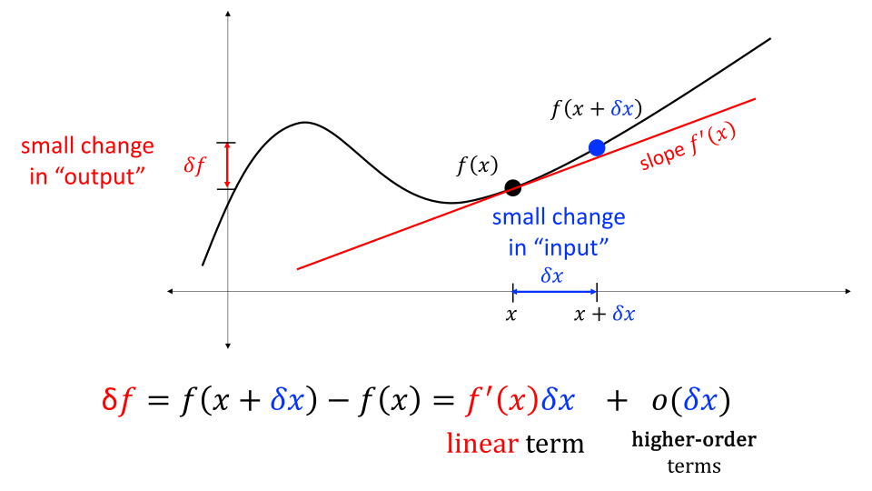
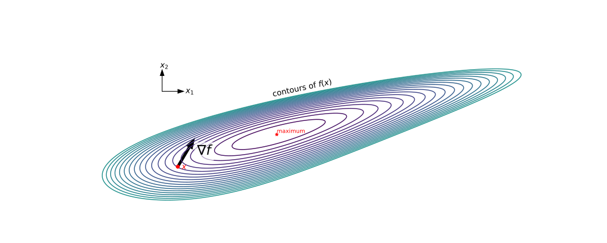
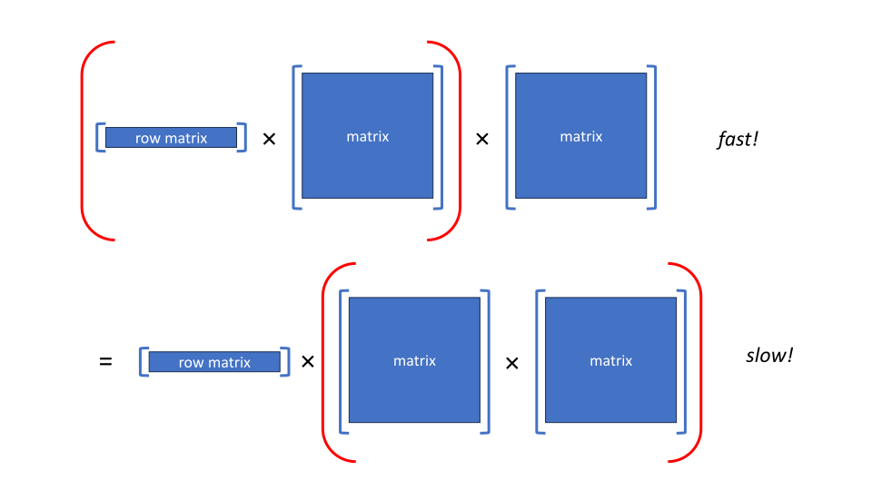
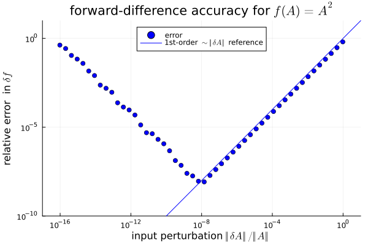
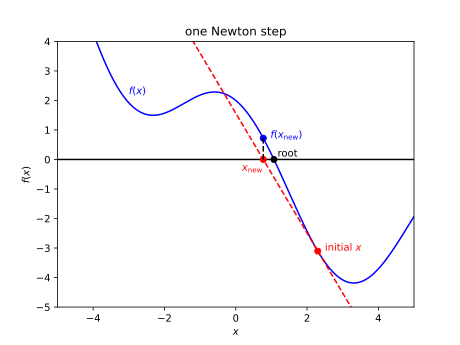
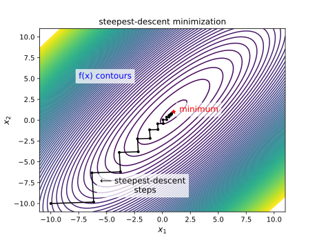
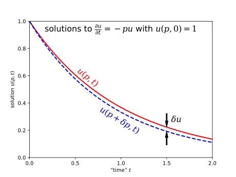
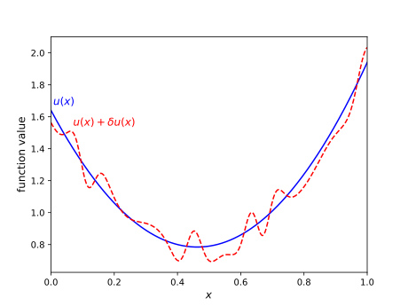
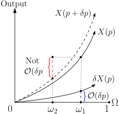
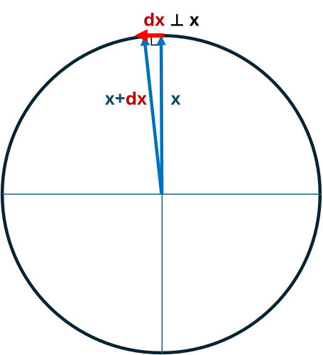

Matrix Calculus
(for Machine Learning and Beyond)
{% raw %} # Introduction {#introduction .unnumbered}
These notes are based on the class as it was run for the second time in January 2023, taught by Professors Alan Edelman and Steven G. Johnson at MIT. The previous version of this course, run in January 2022, can be found on OCW here.
Both Professors Edelman and Johnson use he/him pronouns and are in the Department of Mathematics at MIT; Prof. Edelman is also a Professor in the MIT Computer Science and Artificial Intelligence Laboratory (CSAIL) running the Julia lab, while Prof. Johnson is also a Professor in the Department of Physics.
Here is a description of the course.:
We all know that typical calculus course sequences begin with univariate and vector calculus, respectively. Modern applications such as machine learning and large-scale optimization require the next big step, “matrix calculus” and calculus on arbitrary vector spaces.
This class covers a coherent approach to matrix calculus showing techniques that allow you to think of a matrix holistically (not just as an array of scalars), generalize and compute derivatives of important matrix factorizations and many other complicated-looking operations, and understand how differentiation formulas must be re-imagined in large-scale computing. We will discuss “reverse” (“adjoint”, “backpropagation”) differentiation and how modern automatic differentiation is more computer science than calculus (it is neither symbolic formulas nor finite differences).
The class involved numerous example numerical computations using the Julia language, which you can install on your own computer following these instructions. The material for this class is also located on GitHub at https://github.com/mitmath/matrixcalc.
Overview and Motivation
Firstly, where does matrix calculus fit into the MIT course catalog? Well, there are 18.01 (Single-Variable Calculus) and 18.02 (Vector Calculus) that students are required to take at MIT. But it seems as though this sequence of material is being cut off arbitrarily: After all, this is how the sequence is portrayed in many computer programming languages, including Julia! Why should calculus stop with vectors?
In the last decade, linear algebra has taken on larger and larger importance in numerous areas, such as machine learning, statistics, engineering, etc. In this sense, linear algebra has gradually taken over a much larger part of today’s tools for lots of areas of study—now everybody needs linear algebra. So it makes sense that we would want to do calculus on these higher-order arrays, and it won’t be a simple/obvious generalization (for instance, for non-scalar matrices
).
More generally, the subjects of differentiation and sensitivity analysis are much deeper than one might suspect from the simple rules learned in first- or second-semester calculus. Differentiating functions whose inputs and/or outputs are in more complicated vector spaces (e.g. matrices, functions, or more) is one part of this subject. Another topic is the efficient evaluation of derivatives of functions involving very complicated calculations, from neural networks to huge engineering simulations—this leads to the topic of “adjoint” or “reverse-mode” differentiation, also known as “backpropagation.” Automatic differentiation (AD) of computer programs by compilers is another surprising topic, in which the computer does something very different from the typical human process of first writing out an explicit symbolic formula and then passing the chain rule through it. These are only a few examples: the key point is that differentiation is more complicated than you may realize, and that these complexities are increasingly relevant for a wide variety of applications.
Let’s quickly talk about some of these applications.
Applications
Applications: Machine learning
Machine learning has numerous buzzwords associated with it, including but not limited to: parameter optimization, stochastic gradient descent, automatic differentiation, and backpropagation. In this whole collage you can see a fraction of how matrix calculus applies to machine learning. It is recommended that you look into some of these topics yourself if you are interested.
Applications: Physical modeling
Large physical simulations, such as engineering-design problems, are increasingly characterized by huge numbers of parameters, and the derivatives of simulation outputs with respect to these parameters is crucial in order to evaluate sensitivity to uncertainties as well as to apply large-scale optimization.
For example, the shape of an airplane wing might be characterized by thousands of parameters, and if you can compute the derivative of the drag force (from a large fluid-flow simulation) with respect to these parameters then you could optimize the wing shape to minimize the drag for a given lift or other constraints.
An extreme version of such parameterization is known as “topology optimization,” in which the material at “every point” in space is potentially a degree of freedom, and optimizing over these parameters can discover not only a optimal shape but an optimal topology (how materials are connected in space, e.g. how many holes are present). For example, topology optimization has been applied in mechanical engineering to design the cross sections of airplane wings, artificial hips, and more into a complicated lattice of metal struts (e.g. minimizing weight for a given strength).
Besides engineering design, complicated differentiation problems arise in fitting unknown parameters of a model to experimental data, and also in evaluating uncertainties in the outputs of models with imprecise parameters/inputs. This is closely related to regression problems in statistics, as discussed below, except that here the model might be a giant set of differential equations with some unknown parameters.
Applications: Data science and multivariable statistics
In multivariate statistics, models are often framed in terms of matrix inputs and outputs (or even more complicated objects such as tensors). For example, a “simple” linear multivariate matrix model might be , where
is an unknown matrix of coefficients (to be determined by some form of fit/regression) and
is unknown matrix of random noise (that prevents the model from exactly fitting the data). Regression then involves minimizing some function of the error
between the model
and data
; for example, a matrix norm
, a determinant
, or more complicated functions. Estimating the best-fit coefficients
, analyzing uncertainties, and many other statistical analyses require differentiating such functions with respect to
or other parameters. A recent review article on this topic is Liu et al. (2022): “Matrix differential calculus with applications in the multivariate linear model and its diagnostics” (https://doi.org/10.1016/j.sctalk.2023.100274).
Applications: Automatic differentiation
Typical differential calculus classes are based on symbolic calculus, with students essentially learning to do what Mathematica or Wolfram Alpha can do. Even if you are using a computer to take derivatives symbolically, to use this effectively you need to understand what is going on beneath the hood. But while, similarly, some numerics may show up for a small portion of this class (such as to approximate a derivative using the difference quotient), today’s automatic differentiation is neither of those two things. It is more in the field of the computer science topic of compiler technology than mathematics. However, the underlying mathematics of automatic differentiation is interesting, and we will learn about this in this class!
Even approximate computer differentiation is more complicated than you might expect. For single-variable functions , derivatives are defined as the limit of a difference
as
. A crude “finite-difference” approximation is simply to approximate
by this formula for a small
, but this turns out to raise many interesting issues involving balancing truncation and roundoff errors, higher-order approximations, and numerical extrapolation.
First Derivatives
The derivative of a function of one variable is itself a function of one variable– it simply is (roughly) defined as the linearization of a function. I.e., it is of the form . In this sense, “everything is easy” with scalar functions of scalars (by which we mean, functions that take in one number and spit out one number).
There are occasionally other notations used for this linearization:
,
,
,
and
.
This last one will be the preferred of the above for this class. One can think of and
as “really small numbers.” In mathematics, they are called infinitesimals, defined rigorously via taking limits. Note that here we do not want to divide by
. While this is completely fine to do with scalars, once we get to vectors and matrices you can’t always divide!
The numerics of such derivatives are simple enough to play around with. For instance, consider the function and the point
. Then, we have the following numerical values near
:
Here, the bolded digits on the left are
and the bolded digits on the right are
. Notice that
. Hence, we have that
Therefore, we have that the linearization of
at
is the function
.
We now leave the world of scalar calculus and enter the world of vector/matrix calculus! Professor Edelman invites us to think about matrices holistically—not just as a table of numbers.
The notion of linearizing your function will conceptually carry over as we define the derivative of functions which take in/spit out more than one number. Of course, this means that the derivative will have a different “shape” than a single number. Here is a table on the shape of the first derivative. The inputs of the function are given on the left hand side of the table, and the outputs of the function are given across the top.
2-4 input |
scalar | vector | matrix |
|---|---|---|---|
| scalar | scalar | vector (for instance, velocity) | matrix |
| vector | gradient = (column) vector | matrix (called the Jacobian matrix) | higher order array |
| matrix | matrix | higher order array | higher order array |
You will ultimately learn how to do any of these in great detail eventually in this class! The purpose of this table is to plant the notion of differentials as linearization. Let’s look at an example.
Let , where
is a
matrix and the output is thus a
matrix. Confirm that
is indeed the differential of
at
.
Firstly, let’s compute :
Then, suppose
. Then, we would have that
Then, notice that
. Hence, we have that
As we will see right now, the
didn’t come from nowhere!
Intro: Matrix and Vector Product Rule
For matrices, we in fact still have a product rule! We will discuss this in much more detail in later chapters, but let’s begin here with a small taste.
Let be two matrices. Then, we have the differential product rule for
:
By the differential of the matrix
, we think of it as a small (unconstrained) change in the matrix
Later, constraints may be places on the allowed perturbations.
Notice however, that (by our table) the derivative of a matrix is a matrix! So generally speaking, the products will not commute.
If is a vector, then by the differential product rule we have
However, notice that this is a dot product, and dot products commute (since
), we have that
Remark. The way the product rule works for vectors as matrices is that transposes “go for the ride.” See the next example below.
By the product rule. we have
since dot products commute.
Remark. The way to prove these sorts of statements can be seen in Section 2.
Derivatives as Linear Operators
We are now going to revisit the notion of a derivative in a way that we can generalize to higher-order arrays and other vector spaces. We will get into more detail on differentiation as a linear operator, and in particular, will dive deeper into some of the facts we have stated thus far.
Revisiting single-variable calculus

In a first-semester single-variable calculus course (like 18.01 at MIT), the derivative is introduced as the slope of the tangent line at the point
, which can also be viewed as a linear approximation of
near
. In particular, as depicted in Fig. 1, this is equivalent to a prediction of the change
in the “output” of
from a small change
in the “input” to first order (linear) in
:
We can more precisely express these higher-order terms using asymptotic “little-o” notation “
”, which denotes any function whose magnitude shrinks much faster than
as
, so that for sufficiently small
it is negligible compared to the linear
term. (Variants of this notation are commonly used in computer science, and there is a formal definition that we omit here.1) Examples of such higher-order terms include
,
,
, and
.
Remark. Here, is not an infinitesimal but rather a small number. Note that our symbol “
” (a Greek lowercase “delta”) is not the same as the symbol “
” commonly used to denote partial derivatives.
This notion of a derivative may remind you of the first two terms in a Taylor series (though in fact it is much more basic than Taylor series!), and the notation will generalize nicely to higher dimensions and other vector spaces. In differential notation, we can express the same idea as:
In this notation we implicitly drop the
term that vanishes in the limit as
becomes infinitesimally small.
We will use this as the more generalized definition of a derivative. In this formulation, we avoid dividing by , because soon we will allow
(and hence
) to be something other than a number—if
is a vector, we won’t be able to divide by it!
Linear operators
From the perspective of linear algebra, given a function , we consider the derivative of
, to be the linear operator
such that
As above, you should think of the differential notation as representing an arbitrary small change in
, where we are implicitly dropping any
terms, i.e. terms that decay faster than linearly as
. Often, we will omit the square brackets and write simply
instead of
, but this should be understood as the linear operator
acting on
—don’t write
, which will generally be nonsense!
This definition will allow us to extend differentiation to arbitrary vector spaces of inputs and outputs
. (More technically, we will require vector spaces with a norm
, called “Banach spaces,” in order to precisely define the
terms that are dropped. We will come back to the subject of Banach spaces later.)
Loosely, a vector space (over ) is a set of elements in which addition and subtraction between elements is defined, along with multiplication by real scalars. For instance, while it does not make sense to multiply arbitrary vectors in
, we can certainly add them together, and we can certainly scale the vectors by a constant factor.
Some examples of vector spaces include:
, as described in the above. More generally,
, the space of
matrices with real entries. Notice again that, if
, then multiplication between elements is not defined.
, the set of continuous functions over
Recall that a linear operator is a map from a vector
in vector space
to a vector
(sometimes denoted simply
) in some other vector space. Specifically,
is linear if
for scalars
.
Remark: In this course, is a map that takes in an
and spits out a linear operator
(the derivative of
at
). Furthermore,
is a linear map that takes in an input direction
and gives an output vector
(which we will later interpret as a directional derivative, see Sec. 2.2.1). When the direction
is an infinitesimal
, the output
is the differential of
(the corresponding infinitesimal change in
).
There are multiple notations for derivatives in common use, along with multiple related concepts of derivative, differentiation, and differentials. In the table below, we summarize several of these notations, and put around the notations adopted for this course:
| name | notations | remark |
|---|---|---|
| derivative | linear operator |
|
| … | change |
In single-variable calculus, this linear operator can be represented by a *single number*, the "slope," e.g. if $f(x) = \sin(x)$ then $f'(x) = \cos(x)$ is the number that we multiply by $dx$ to get $dy = \cos(x) dx$. In multi-variable calculus, the linear operator $f'(x)$ can be represented by a *matrix*, the **Jacobian** $J$ (see Sec. [3](#sec:kronecker){reference-type="ref" reference="sec:kronecker"}), so that $df = f'(x)[dx] = J\, dx$. But we will see that it is not always convenient to express $f'$ as a matrix, even if we can.differentiation ,
,
, … linear operator that maps a function
to its derivative
difference
and
small (but not infinitesimal) change in the input
and output
(depending implicitly on
and
), respectively: an element of a vector space, not a linear operator differential
and
arbitrarily small (“infinitesimal”2 — we drop higher-order terms) change in the input
and output
, respectively: an element of a vector space, not a linear operator gradient
the vector whose inner product
with a small change
in the input gives the small change
in the output. The “transpose of the derivative”
. (See Sec. 2.3.) partial derivative
,
,
linear operator that maps a small change
in a single argument of a multi-argument function to the corresponding change in output, e.g. for
we have
.
Some examples of linear operators include
Multiplication by scalars
, i.e.
. Also multiplication of column vectors
by matrices
, i.e.
.
Some functions like
are obviously nonlinear. But what about
? This may look linear if you plot it, but it is not a linear operation, because
—such functions, which are linear plus a nonzero constant, are known as affine.
There are also many other examples of linear operations that are not so convenient or easy to write down as matrix–vector products. For example, if
matrix, then
is a linear operator given
. The transpose
of a column vector
is linear, but is not given by any matrix multiplied by
Directional derivatives
There is an equivalent way to interpret this linear-operator viewpoint of a derivative, which you may have seen before in multivariable calculus: as a directional derivative.
If we have a function of arbitrary vectors
, then the directional derivative at
in a direction (vector)
is defined as:
where
is a scalar. This transforms derivatives back into single-variable calculus from arbitrary vector spaces. It measures the rate of change of
in the direction
from
. But it turns out that this has a very simple relationship to our linear operator
from above, because (dropping higher-order terms due to the limit
):
where we have factored out the scalar
in the last step thanks to
being a linear operator. Comparing with above, we immediately find that the directional derivative is:
It is exactly equivalent to our
from before! (We can also see this as an instance of the chain rule from Sec. 2.5.) One lesson from this viewpoint is that it is perfectly reasonable to input an arbitrary non-infinitesimal vector
into
: the result is not a
, but is simply a directional derivative.
Revisiting multivariable calculus, Part 1: Scalar-valued functions

Let be a scalar-valued function, which takes in “column” vectors
and produces a scalar (in
). Then,
Therefore, since
is a column vector (in an arbitrary direction, representing an arbitrary small change in
), the linear operator
that produces a scalar
must be a row vector (a “1-row matrix”, or more formally something called a covector or “dual” vector or “linear form”)! We call this row vector the transpose of the gradient
, so that
is the dot (“inner”) product of
with the gradient. So we have that
Some authors view the gradient as a row vector (equating it with
or the Jacobian), but treating it as a “column vector” (the transpose of
), as we do in this course, is a common and useful choice. As a column vector, the gradient can be viewed as the “uphill” (steepest-ascent) direction in the
space, as depicted in Fig. 2. Furthermore, it is also easier to generalize to scalar functions of other vector spaces. In any case, for this class, we will always define
to have the same “shape” as
, so that
is a dot product (“inner product”) of
with the gradient.
This is perfectly consistent with the viewpoint of the gradient that you may remember from multivariable calculus, in which the gradient was a vector of components or, equivalently,
While a component-wise viewpoint may sometimes be convenient, we want to encourage you to view the vector
as a whole, not simply a collection of components, and to learn that it is often more convenient and elegant to differentiate expressions without taking the derivative component-by-component, a new approach that will generalize better to more complicated inputs/output vector spaces.
Let’s look at an example to see how we compute this differential.
Consider where
and
is a square
matrix, and thus
. Compute
,
, and
.
We can do this directly from the definition. Here, we dropped terms with more than one
factor as these are asymptotically negligible. Another trick was to combine
and
by realizing that these are scalars and hence equal to their own transpose:
. Hence, we have found that
, or equivalently
.
It is, of course, also possible to compute the same gradient component-by-component, the way you probably learned to do in multivariable calculus. First, you would need to write explicitly in terms of the components of
, as
. Then, you would compute
for each
, taking care that
appears twice in the
summation. However, this approach is awkward, error-prone, labor-intensive, and quickly becomes worse as we move on to more complicated functions. It is much better, we feel, to get used to treating vectors and matrices as a whole, not as mere collections of numbers.
Revisiting multivariable calculus, Part 2: Vector-valued functions
Next time, we will revisit multi-variable calculus (18.02 at MIT) again in a Part 2, where now will be a vector-valued function, taking in vectors
and giving vector outputs
. Then,
will be a
-component column vector,
will be an
-component column vector, and we must get a linear operator
satisfying
so
must be an
matrix called the Jacobian of
!
The Jacobian matrix represents the linear operator that takes
to
:
The matrix
has entries
(corresponding to the
-th row and the
-th column of
).
So now, suppose that . Let’s understand how we would compute the differential of
:
Let’s compute an example.
Consider the function where
is a constant
matrix. Then, by applying the distributive law for matrix–vector products, we have
Therefore,
.
Notice then that the linear operator is its own Jacobian matrix!
Let’s now consider some derivative rules.
Sum Rule: Given
, we get that
Hence,
as we should expect. This is the linear operator
, and note that we can sum linear operators (like
and
) just like we can sum matrices! In this way, linear operators form a vector space.
Product Rule: Suppose
. Then, $$
$$ where the
term is higher-order and hence dropped in infinitesimal notation. Note, as usual, that
and
may not commute now as they may no longer be scalars!
Let’s look at some short examples of how we can apply the product rule nicely.
Let (mapping
) where
is a constant
matrix. Then,
We have
here because
does not change when we change
.
Let (mapping
). Then,
and hence
. (In the common case where
is symmetric, this simplifies to
.) Note that here we have applied Example [ex:Ax] in computing
. Furthermore,
is a scalar valued function, so we may also obtain the gradient
as before (which simplifies to
if
is symmetric).
Given , define
the element-wise product of vectors (also called the Hadamard product), where for convenience below we also define
as the
diagonal matrix with
on the diagonal. Then, given
, define
via
As an exercise, one can verify the following:
,
.
. So if we take
to be a constant and define
, its Jacobian matrix is
.
, so the Jacobian matrix is
.
Notice that the directional derivative (Sec. 2.2.1) of
at
. One could also check numerically for some arbitrary
that
.
The Chain Rule
One of the most important rules from differential calculus is the chain rule, because it allows us to differentiate complicated functions built out of compositions of simpler functions. This chain rule can also be generalized to our differential notation in order to work for functions on arbitrary vector spaces:
Chain Rule: Let
. Then, $$
$$ where
is a composition of
In other words,
: the Jacobian (linear operator)
is simply the product (composition) of the Jacobians,
. Ordering matters because linear operators do not generally commute: left-to-right = outputs-to-inputs.
Let’s look more carefully at the shapes of these Jacobian matrices in an example where each function maps a column vector to a column vector:
Let ,
, and
. Then, let
mapping from
to
. The chain rule then states that
which makes sense as
is an
matrix and
is a
matrix, so that the product gives an
matrix
! However, notice that this is not the same as
as you cannot (if
) multiply a
and an
matrix together, and even if
you will get the wrong answer since they probably won’t commute.
Not only does the order of the multiplication matter, but the associativity of matrix multiplication matters practically. Let’s consider a function where
,
, and
. Then, we have that, by the chain rule,
Notice that this is the same as
by associativity (omitting the function arguments for brevity). The left-hand side is multiplication from left to right, and the right-hand side is multiplication from right to left.
But who cares? Well it turns out that associativity is deeply important. So important that the two orderings have names: multiplying left-to-right is called “reverse mode” and multiplying right-to-left is called “forward mode” in the field of automatic differentiation (AD). Reverse-mode differentation is also known as an “adjoint method” or “backpropagation” in some contexts, which we will explore in more detail later. Why does this matter? Let’s think about the computational cost of matrix multiplication.
Cost of Matrix Multiplication

If you multiply a matrix by a
matrix, you normally do it by computing
dot products of length
(or some equivalent re-ordering of these operations). To do a dot product of length
requires
multiplications and
additions of scalars. Overall, this is approximately
scalar operations in total. In computer science, you would write that this is “
”: the computational effort is asymptotically proportional to
for large
.
So why does the order of the chain rule matter? Consider the following two examples.
Suppose you have a lot of inputs , and only one output
, with lots of intermediate values, i.e.
. Then reverse mode (left-to-right) will cost
scalar operations while forward mode (right-to-left) would cost
! This is a huge cost difference, depicted schematically in Fig. 3.
Conversely, suppose you have a lot of outputs and only one input
, with lots of intermediate values
. Then reverse mode would cost
operations but forward mode would be only
!
Moral: If you have a lot of inputs and few outputs (the usual case in machine learning and optimization), compute the chain rule left-to-right (reverse mode). If you have a lot of outputs and few inputs, compute the chain rule right-to-left (forward mode). We return to this in Sec. 8.4.
Beyond Multi-Variable Derivatives
Now let’s compute some derivatives that go beyond first-year calculus, where the inputs and outputs are in more general vector spaces. For instance, consider the following examples:
Let be an
matrix. You could have the following matrix-valued functions. For example:
,
if
or
, where
You could also have scalar outputs. For example:
,
trace
or
, the largest singular value of
Let’s focus on two simpler examples for this lecture.
Let where
is a square matrix. Compute
.
Here, we apply the chain rule one step at a time: Notice that this is not equal to
(unless
and
commute, which won’t generally be true since
represents an arbitrary small change in
). The right-hand side is a linear operator
acting on
, but it is not so easy to interpret it as simply a single “Jacobian” matrix multiplying
!
Let where
is a square invertible matrix. Compute
.
Here, we use a slight trick. Notice that , the identity matrix. Thus, we can compute the differential using the product rule (noting that
, since changing
does not change
) so
Jacobians of Matrix Functions
When we have a function that has matrices as inputs and/or outputs, we have already seen in the previous lectures that we can still define the derivative as a linear operator by a formula for mapping a small change in input to the corresponding small change in output. However, when you first learned linear algebra, probably most linear operations were represented by matrices multiplying vectors, and it may take a while to get used to thinking of linear operations more generally. In this chapter, we discuss how it is still possible to represent
by a Jacobian matrix even for matrix inputs/outputs, and how the most common technique to do this involves matrix “vectorization” and a new type of matrix operation, a Kronecker product. This gives us another way to think about our
linear operators that is occasionally convenient, but at the same time it is important to become comfortable with other ways of writing down linear operators too—sometimes, the explicit Jacobian-matrix approach can obscure key structure, and it is often computationally inefficient as well.
For this section of the notes, we refer to the linked Pluto Notebook for computational demonstrations of this material in Julia, illustrating multiple views of the derivative of the square of
matrices
.
Derivatives of matrix functions: Linear operators
As we have already emphasized, the derivative is the linear operator that maps a small change in the input to a small change in the output. This idea can take an unfamiliar form, however, when applied to functions
that map matrix inputs
to matrix outputs. For example, we’ve already considered the following functions on square
matrices:
, which gives
.
, which gives
An even simpler example is the matrix-square function:
which by the product rule gives
You can also work this out explicitly from
, dropping the
term.
In all of these examples, is described by a simple formula for
that relates an arbitrary change
in
to the change
in
, to first order. If the differential is distracting you, realize that we can plug any matrix
we want into this formula, not just an “infinitesimal” change
, e.g. in our matrix-square example we have
for an arbitrary
(a directional derivative, from Sec. 2.2.1). This is linear in
: if we scale or add inputs, it scales or adds outputs, respectively:
This is a perfectly good way to define a linear operation! We are not expressing it here in the familiar form
, and that’s okay! A formula like
is easy to write down, easy to understand, and easy to compute with.
But sometimes you still may want to think of as a single “Jacobian” matrix, using the most familiar language of linear algebra, and it is possible to do that! If you took a sufficiently abstract linear-algebra course, you may have learned that any linear operator can be represented by a matrix once you choose a basis for the input and output vector spaces. Here, however, we will be much more concrete, because there is a conventional “Cartesian” basis for matrices
called “vectorization”, and in this basis linear operators like
are particularly easy to represent in matrix form once we introduce a new type of matrix product that has widespread applications in “multidimensional” linear algebra.
A simple example: The two-by-two matrix-square function
To begin with, let’s look in more detail at our matrix-square function for the simple case of
matrices, which are described by only four scalars, so that we can look at every term in the derivative explicitly. In particular,
For a matrix
the matrix-square function is
Written out explicitly in terms of the matrix entries in this way, it is natural to think of our function as mapping 4 scalar inputs to 4 scalar outputs. That is, we can think of
as equivalent to a “vectorized” function
given by
Converting a matrix into a column vector in this way is called vectorization, and is commonly denoted by the operation “
”:
In terms of
, our “vectorized” matrix-squaring function
is defined by
More generally,
The vectorization of any
matrix
is a defined by simply stacking the columns of
, from left to right, into a column vector
. That is, if we denote the
columns of
by
-component vectors
, then
is an
-component column vector containing all of the entries of
.
On a computer, matrix entries are typically stored in a consecutive sequence of memory locations, which can be viewed a form of vectorization. In fact, corresponds exactly to what is known as “column-major” storage, in which the column entries are stored consecutively; this is the default format in Fortran, Matlab, and Julia, for example, and the venerable Fortran heritage means that column major is widely used in linear-algebra libraries.
.
The vector corresponds to the coefficients you get when you express the
matrix
in a basis of matrices. What is that basis?
Vectorization turns unfamilar things (like matrix functions and derivatives thereof) into familiar things (like vector functions and Jacobians or gradients thereof). In that way, it can be a very attractive tool, almost too attractive—why do “matrix calculus” if you can turn everything back into ordinary multivariable calculus? Vectorization has its drawbacks, however: conceptually, it can obscure the underlying mathematical structure (e.g. above doesn’t look much like a matrix square
), and computationally this loss of structure can sometimes lead to severe inefficiencies (e.g. forming huge
Jacobian matrices as discussed below). Overall, we believe that the primary way to study matrix functions like this should be to view them as having matrix inputs (
) and matrix outputs (
), and that one should likewise generally view the derivatives as linear operators on matrices, not vectorized versions thereof. However, it is still useful to be familiar with the vectorization viewpoint in order to have the benefit of an alternative perspective.
The matrix-squaring four-by-four Jacobian matrix
To understand Jacobians of functions (from matrices to matrices), let’s begin by considering a basic question:
What is the size of the Jacobian of the matrix-square function?
Well, if we view the matrix squaring function via its vectorized equivalent , mapping
(4-component column vectors to 4-component column vectors), the Jacobian would be a
matrix (formed from the derivatives of each output component with respect to each input component). Now let’s think about a more general square matrix
: an
matrix. If we wanted to find the Jacobian of
, we could do so by the same process and (symbolically) obtain an
matrix (since there are
inputs, the entries of
, and
outputs, the entries of
). Explicit computation of these
partial derivatives is rather tedious even for small
, but is a task that symbolic computational tools in e.g. Julia or Mathematica can handle. In fact, as seen in the Notebook, Julia spits out the Jacobian quite easily. For the
case that we wrote out explicitly above, you can either take the derivative of
by hand or use Julia’s symbolic tools to obtain the Jacobian:
For example, the first row of
consists of the partial derivatives of
(the first output) with respect to the 4 inputs
. Here, we have labeled the rows by the (row,column) indices
of the entries in the “output” matrix
, and have labeled the columns by the indices
of the entries in the “input” matrix
. Although we have written the Jacobian
as a “2d” matrix, you can therefore also imagine it to be a “4d” matrix indexed by
.
However, the matrix-calculus approach of viewing the derivative as a linear transformation on matrices (as we derived above),
seems to be much more revealing than writing out an explicit component-by-component “vectorized” Jacobian
, and gives a formula for any
matrix without laboriously requiring us to take
partial derivatives one-by-one. If we really want to pursue the vectorization perspective, we need a way to recapture some of the structure that is obscured by tedious componentwise differentiation. A key tool to bridge the gap between the two perspectives is a type of matrix operation that you may not be familiar with: Kronecker products (denoted
).
Kronecker Products
A linear operation like can be thought of as a “higher-dimensional matrix:” ordinary “2d” matrices map “1d” column vectors to 1d column vectors, whereas to map 2d matrices to 2d matrices you might imagine a “4d” matrix (sometimes called a tensor). To transform 2d matrices back into 1d vectors, we already saw the concept of vectorization (
). A closely related tool, which transforms “higher dimensional” linear operations on matrices back into “2d” matrices for the vectorized inputs/outputs, is the Kronecker product
. Although they don’t often appear in introductory linear-algebra courses, Kronecker products show up in a wide variety of mathematical applications where multidimensional data arises, such as multivariate statistics and data science or multidimensional scientific/engineering problems.
If is an
matrix with entries
and
is a
matrix, then their Kronecker product
is defined by
so that
is an
matrix formed by “pasting in” a copy of
multiplying every element of
.
For example, consider matrices
Then
is a
matrix containing all possible products of entries
with entries of
. Note that
(but the two are related by a re-ordering of the entries):
where we’ve colored one copy of
red for illustration. See the Notebook for more examples of Kronecker products of matrices (including some with pictures rather than numbers!).
Above, we saw that at
could be thought of as an equivalent function
mapping column vectors of 4 inputs to 4 outputs (
), with a
Jacobian that we (or the computer) laboriously computed as 16 element-by-element partial derivatives. It turns out that this result can be obtained much more elegantly once we have a better understanding of Kronecker products. We will find that the
“vectorized” Jacobian is simply
where
is the
identity matrix. That is, the matrix linear operator
is equivalent, after vectorization, to:
In order to understand why this is the case, however, we must first build up some understanding of the algebra of Kronecker products. To start with, a good exercise is to convince yourself of a few simpler properties of Kronecker products:
From the definition of the Kronecker product, derive the following identities:
.
.
. (Follows from property 2.)
is orthogonal (its transpose is its inverse) if
are orthogonal. (From properties 1 & 3.)
, where
and
.
.
Given eigenvectors/values
and
of
is an eigenvalue of
. (Also, since
where
, you can relate this via Prop. [prop5000] below to the identity
.)
Key Kronecker-product identity
In order to convert linear operations like into Kronecker products via vectorization, the key identity is:
Given (compatibly sized) matrices , we have
We can thus view
as a vectorized equivalent of the linear operation
. We are tempted to introduce a parallel notation
for the “non-vectorized” version of this operation, although this notation is not standard.
One possible mnemonic for this identity is that the is just to the left of the
while the
“circles around” to the right and gets transposed.
Where does this identity come from? We can break it into simpler pieces by first considering the cases where either or
is an identity matrix
(of the appropriate size). To start with, suppose that
, so that
. What is
? If we let
denote the columns of
, then recall that
simply multiples
on the left with each of the columns of
:
Now, how can we get this
vector as something multiplying
? It should be immediately apparent that
but this matrix is exactly the Kronecker product
! Hence, we have derived that
What about the
term? This is a little trickier, but again let’s simplify to the case where
, in which case
. To vectorize this, we need to look at the columns of
. What is the first column of
? It is a linear combination of the columns of
whose coefficients are given by the first column of
(= first row of
):
Similarly for column 2, etc, and we then “stack” these columns to get
. But this is exactly the formula for multipling a matrix
by a vector, if the “elements” of the vector were the columns
. Written out explicitly, this becomes:
and hence we have derived
The full identity
can then be obtained by straightforwardly combining these two derivations: replace
with
in the second derivation, which replaces
with
and hence
with
.
The Jacobian in Kronecker-product notation
So now we want to use Prop. [prop5000] to calculate the Jacobian of in terms of the Kronecker product. Let
be our
in Prop. [prop5000]. We can now immediately see that
where
is the identity matrix of the same size as
. We can also write this in our “non-vectorized” linear-operator notation:
In the
example, these Kronecker products can be computed explicitly:
which exactly matches our laboriously computed Jacobian
from earlier!
For the matrix-cube function , where
is an
square matrix, compute the
Jacobian of the vectorized function
.
Let’s use the same trick for the matrix-cube function. Sure, we could laboriously compute the Jacobian via element-by-element partial derivatives (which is done nicely by symbolic computing in the notebook), but it’s much easier and more elegant to use Kronecker products. Recall that our “non-vectorized” matrix-calculus derivative is the linear operator: which now vectorizes by three applications of the Kronecker identity:
You could go on to find the Jacobians of
,
, and so on, or any linear combination of matrix powers. Indeed, you could imagine applying a similar process to the Taylor series of any (analytic) matrix function
, but it starts to become awkward. Later on (and in homework), we will discuss more elegant ways to differentiate other matrix functions, not as vectorized Jacobians but as linear operators on matrices.
The computational cost of Kronecker products
One must be cautious about using Kronecker products as a computational tool, rather than as more of a conceptual tool, because they can easily cause the computational cost of matrix problems to explode far beyond what is necessary.
Suppose that ,
, and
are all
matrices. The cost of multiplying two
matrices (by the usual methods) scales proportional to
, what the computer scientists call
“complexity.” Hence, the cost of the linear operation
scales as
(two
multiplications). However, if we instead compute the same answer via
, then we must:
Form the
matrix
multiplications (all entries of
memory storage. (Compare to
memory to store
is 1000, this is a million times more storage, terabytes instead of megabytes!)
Multiply
of
entries. Multiplying an
matrix by a vector requires
operations, and here
, so this is again
So, instead of operations and
storage to compute
, using
requires
operations and
storage, vastly worse! Essentially, this is because
has a lot of structure that we are not exploiting (it is a very special
matrix).
There are many examples of this nature. Another famous one involves solving the linear matrix equations for an unknown matrix
, given
, where all of these are
matrices. This is called a “Sylvester equation.” These are linear equations in our unknown
, and we can convert them to an ordinary system of
linear equations by Kronecker products:
which you can then solve for the
unknowns
using Gaussian elimination. But the cost of solving an
system of equations by Gaussian elimination is
. It turns out, however, that there are clever algorithms to solve
in only
operations (with
memory)—for
, this saves a factor of
(a billion) in computational effort.
(Kronecker products can be a more practical computational tool for sparse matrices: matrices that are mostly zero, e.g. having only a few nonzero entries per row. That’s because the Kronecker product of two sparse matrices is also sparse, avoiding the huge storage requirements for Kronecker products of non-sparse “dense” matrices. This can be a convenient way to assemble large sparse systems of equations for things like multidimensional PDEs.)
Finite-Difference Approximations
In this section, we will be referring to this Julia notebook for calculations that are not included here.
Why compute derivatives approximately instead of exactly?
Working out derivatives by hand is a notoriously error-prone procedure for complicated functions. Even if every individual step is straightforward, there are so many opportunities to make a mistake, either in the derivation or in its implementation on a computer. Whenever you implement a derivatives, you should always double-check for mistakes by comparing it to an independent calculation. The simplest such check is a finite-difference approximation, in which we estimate the derivative(s) by comparing and
for one or more “finite” (non-infinitesimal) perturbations
.
There are many finite-difference techniques at varying levels of sophistication, as we will discuss below. They all incur an intrinsic truncation error due to the fact that is not infinitesimal. (And we will also see that you can’t make
too small, either, or roundoff errors start exploding!) Moreover, finite differences become expensive for higher-dimensional
(in which you need a separate finite difference for each input dimension to compute the full Jacobian). This makes them an approach of last resort for computing derivatives accurately. On the other hand, they are the first method you generally employ in order to check derivatives: if you have a bug in your analytical derivative calculation, usually the answer is completely wrong, so even a crude finite-difference approximation for a single small
(chosen at random in higher dimensions) will typically reveal the problem.
Another alternative is automatic differentiation (AD), software/compilers perform analytical derivatives for you. This is extremely reliable and, with modern AD software, can be very efficient. Unfortunately, there is still lots of code, e.g. code calling external libraries in other languages, that AD tools can’t comprehend. And there are other cases where AD is inefficient, typically because it misses some mathematical structure of the problem. Even in such cases, you can often fix AD by defining the derivative of one small piece of your program by hand,3 which is much easier than differentiating the whole thing. In such cases, you still will typically want a finite-difference check to ensure that you have not made a mistake.
It turns out that finite-difference approximations are a surprisingly complicated subject, with rich connections to many areas of numerical analysis; in this lecture we will just scratch the surface.
Finite-Difference Approximations: Easy Version
The simplest way to check a derivative is to recall that the definition of a differential: came from dropping higher-order terms from a small but finite difference:
So, we can just compare the finite difference
to our (directional) derivative operator
(i.e. the derivative in the direction
).
is also called a forward difference approximation. The antonym of a forward difference is a backward difference approximation
. If you just want to compute a derivative, there is not much practical distinction between forward and backward differences. The distinction becomes more important when discretizing (approximating) differential equations. We’ll look at other possibilities below.
Remark. Note that this definition of forward and backward difference is not the same as forward- and backward-mode differentiation—these are unrelated concepts.
If is a scalar, we can also divide both sides by
to get an approximation for
instead of for
:
This is a more common way to write the forward-difference approximation, but it only works for scalar
, whereas in this class we want to think of
as perhaps belonging to some other vector space.
Finite-difference approximations come in many forms, but they are generally a last resort in cases where it’s too much effort to work out an analytical derivative and AD fails. But they are also useful to check your analytical derivatives and to quickly explore.
Example: Matrix squaring
Let’s try the finite-difference approximation for the square function , where here
is a square matrix in
. By hand, we obtain the product rule
i.e.
is the linear operator
This is not equal to
because in general
and
do not commute. So let’s check this difference against a finite difference. We’ll try it for a random input A and a random small perturbation
.
Using a random matrix , let
. Then, you can compare
to
. If the matrix you chose was really random, you would get that the approximation minus the exact equality from the product rule has entries with order of magnitude around
However, compared to
, you’d obtain entries of order
.
To be more quantitative, we might compute that "norm" which we want to be small. But small compared to what? The natural answer is small compared to the correct answer. This is called the relative error (or "fractional error") and is computed via
Here,
is a norm, like the length of a vector. This allows us to understand the size of the error in the finite difference approximation, i.e. it allows us to answer how accurate this approximation is (recall Sec. 4.1).
So, as above, you can compute that the relative error between the approximation and the exact answer is about , where as the relative error between
and the exact answer is about
. This shows that our exact answer is likely correct! Getting a good match up between a random input and small displacement isn’t a proof of correctness of course, but it is always a good thing to check. This kind of randomized comparison will almost always catch major bugs where you have calculated the symbolic derivative incorrectly, like in our
example.
Note that the norm of a matrix that we are using, computed by norm(A) in Julia, is just the direct analogue of the familiar Euclidean norm for the case of vectors. It is simply the square root of the sum of the matrix entries squared: This is called the Frobenius norm.
Accuracy of Finite Differences
Now how accurate is our finite-difference approximation above? How should we choose the size of ?
Let’s again consider the example , and plot the relative error as a function of
. This plot will be done logarithmically (on a log–log scale) so that we can see power-law relationships as straight lines.

We notice two main features as we decrease :
The relative error at first decreases linearly with
. This is called first-order accuracy. Why?
When
gets too small, the error increases. Why?
Order of accuracy
The truncation error is the inaccuracy arising from the fact that the input perturbation is not infinitesimal: we are computing a difference, not a derivative. If the truncation error in the derivative scales proportional
, we call the approximation n-th order accurate. For forward differences, here, the order is n=1. Why?
For any with a nonzero second derivative (think of the Taylor series), we have
That is, the terms we dropped in our forward-difference approximations are proportional to
. But that means that the relative error is linear:
This is first-order accuracy. Truncation error in a finite-difference approximation is the inherent error in the formula for non-infinitesimal
. Does that mean we should just make
as small as we possibly can?
Roundoff error
The reason why the error increased for very small was due to roundoff errors. The computer only stores a finite number of significant digits (about 15 decimal digits) for each real number and rounds off the rest on each operation — this is called floating-point arithmetic. If
is too small, then the difference
gets rounded off to zero (some or all of the significant digits cancel). This is called catastrophic cancellation.
Floating-point arithmetic is much like scientific notation : a finite-precision coefficient
scaled by a power of
(or, on a computer, a power of
). The number of digits in the coefficient (the “significant digits”) is the “precision,” which in the usual 64-bit floating-point arithmetic is charactized by a quantity
, called the machine epsilon. When an arbitrary real number
is rounded to the closest floating-point value
, the roundoff error is bounded by
. Equivalently, the computer keeps only about 15–16
decimal digits, or really
binary digits, for each number.
In our finite-difference example, for of roughly
or larger, the approximation for
is dominated by the truncation error, but if we go smaller than that the relative error starts increasing due to roundoff. Experience has shown that
is often a good rule of thumb—about half the significant digits is the most that is reasonably safe to rely on—but the precise crossover point of minimum error depends on the function
and the finite-difference method. But, like all rules of thumb, this may not always be completely reliable.
Other finite-difference methods
There are more sophisticated finite-difference methods, such as Richardson extrapolation, which consider a sequence of progressively smaller values in order to adaptively determine the best possible estimate for
(extrapolating to
using progressively higher degree polynomials). One can also use higher-order difference formulas than the simple forward-difference method here, so that the truncation error decreases faster than than linearly with
. The most famous higher-order formula is the “centered difference”
, which has second-order accuracy (relative truncation error proportional to
).
Higher-dimensional inputs pose a fundamental computational challenge for finite-difference techniques, because if you want to know what happens for every possible direction
then you need many finite differences: one for each dimension of
. For example, suppose
and
, so that you are computing
; if you want to know the whole gradient, you need
separate finite differences. The net result is that finite differences in higher dimensions are expensive, quickly becoming impractical for high-dimensional optimization (e.g. neural networks) where
might be huge. On the other hand, if you are just using finite differences as a check for bugs in your code, it is usually sufficient to compare
to
in a few random directions, i.e. for a few random small
.
Derivatives in General Vector Spaces
Matrix calculus requires us to generalize concepts of derivative and gradient further, to functions whose inputs and/or outputs are not simply scalars or column vectors. To achieve this, we extend the notion of the ordinary vector dot product and ordinary Euclidean vector “length” to general inner products and norms on vector spaces. Our first example will consider familiar matrices from this point of view.
Recall from linear algebra that we can call any set a “vector space” if its elements can be added/subtracted
and multiplied by scalars
(subject to some basic arithmetic axioms, e.g. the distributive law). For example, the set of
matrices themselves form a vector space, or even the set of continuous functions
(mapping
)—the key fact is that we can add/subtract/scale them and get elements of the same set. It turns out to be extraordinarily useful to extend differentiation to such spaces, e.g. for functions that map matrices to matrices or functions to numbers. Doing so crucially relies on our input/output vector spaces
having a norm and, ideally, an inner product.
A Simple Matrix Dot Product and Norm
Recall that for scalar-valued functions with vector inputs
(i.e.
-component “column vectors") we have that
Therefore,
is a linear operator taking in the vector
in and giving a scalar value out. Another way to view this is that
is the row vector4
. Under this viewpoint, it follows that
is the dot product (or”inner product”):
We can generalize this to any vector space with inner products! Given
, and a scalar-valued function
, we obtain the linear operator
, called a “linear form.” In order to define the gradient
, we need an inner product for
, the vector-space generalization of the familiar dot product!
Given , the inner product
is a map (
) such that
. This is also commonly denoted
or
. More technically, an inner product is a map that is
Symmetric: i.e.
(or conjugate-symmetric,5
, if we were using complex numbers),
Linear: i.e.
, and
Non-negative: i.e.
, and
if and only if
.
Note that the combination of the first two properties means that it must also be linear in the left vector (or conjugate-linear, if we were using complex numbers). Another useful consequence of these three properties, which is a bit trickier to derive, is the Cauchy–Schwarz inequality .
A (complete) vector space with an inner product is called a Hilbert space. (The technical requirement of “completeness” essentially means that you can take limits in the space, and is important for rigorous proofs.6)
Once we have a Hilbert space, we can define the gradient for scalar-valued functions. Given a Hilbert space, and
scalar, then we have the linear form
. Then, under these assumptions, there is a theorem known as the “Riesz representation theorem” stating that any linear form (including
) must be an inner product with something:
That is, the gradient
is defined as the thing you take the inner product of
with to get
. Note that
always has the “same shape” as
.
The first few examples we look at involve the usual Hilbert space with different inner products.
Given with
-column vectors, we have the familiar Euclidean dot product
. This leads to the usual
.
We can have different inner products on . For instance,
for weights
.
More generally we can define a weighted dot product for any symmetric-positive-definite matrix
(
and
is positive definite, which is sufficient for this to be a valid inner product).
If we change the definition of the inner product, then we change the definition of the gradient! For example, with we previously found that
. With the ordinary Euclidean inner product, this gave a gradient
. However, if we use the weighted inner product
, then we would obtain a different “gradient”
so that
.
In these notes, we will employ the Euclidean inner product for , and hence the usual
, unless noted otherwise. However, weighted inner products are useful in lots of cases, especially when the components of
have different scales/units.
We can also consider the space of matrices
. There, is of course, a vector-space isomorphism from
. Thus, in this space we have the analogue of the familiar (“Frobenius") Euclidean inner product, which is convenient to rewrite in terms of matrix operations via the trace:
The Frobenius inner product of two matrices
and
is:
Given this inner product, we also have the corresponding Frobenius norm:
Using this, we can now define the gradient of scalar functions with matrix inputs! This will be our default matrix inner product (hence defining our default matrix gradient) in these notes (sometimes dropping the
subscript).
Consider the function What is
?
Firstly, by the familiar scalar-differentiation chain and power rules we have that Then, note that (by linearity of the trace)
Hence,
Here, we used the fact that
, and in the last step we connected
with a Frobenius inner product. In other words,
Note that one obtains exactly the same result for column vectors
, i.e.
(and in fact this is equivalent via
).
Let’s consider another simple example:
Fix some constant ,
, and consider the function
given by
What is
?
We have that
More generally, for any scalar-valued function , from the definition of Frobenius inner product it follows that:
and hence the components of the gradient are exactly the elementwise derivatives
similar to the component-wise definition of the gradient vector from multivariable calculus! But for non-trivial matrix-input functions
it can be extremely awkward to take the derivative with respect to each entry of
individually. Using the “holistic” matrix inner-product definition, we will soon be able to compute even more complicated matrix-valued gradients, including
!
Derivatives, Norms, and Banach spaces
We have been using the term “norm” throughout this class, but what technically is a norm? Of course, there are familiar examples such as the Euclidean (“”) norm
for
, but it is useful to consider how this concept generalizes to other vector spaces. It turns out, in fact, that norms are crucial to the definition of a derivative!
Given a vector space , a norm
on
is a map
satisfying the following three properties:
Non-negative: i.e.
and
,
Homogeneity:
for any
, and
Triangle inequality:
.
A vector space that has a norm is called an normed vector space. Often, mathematicians technically want a slightly more precise type of normed vector space with a less obvious name: a Banach space.
A (complete) vector space with a norm is called a Banach space. (As with Hilbert spaces, “completeness” is a technical requirement for some types of rigorous analysis, essentially allowing you to take limits.)
For example, given any inner product , there is a corresponding norm
. (Thus, every Hilbert space is also a Banach space.7)
To define derivatives, we technically need both the input and the output to be Banach spaces. To see this, recall our formalism To precisely define the sense in which the
terms are “smaller” or “higher-order,” we need norms. In particular, the “little-
” notation
denotes any function such that
i.e. which goes to zero faster than linearly in
. This requires both the input
and the output (the function) to have norms. This extension of differentiation to arbitrary normed/Banach spaces is sometimes called the Fréchet derivative.
Nonlinear Root-Finding, Optimization, and Adjoint Differentiation
The next part is based on these slides. Today, we want to talk about why we are computing derivatives in the first place. In particular, we will drill down on this a little bit and then talk about computation of derivatives.
Newton’s Method
One common application of derivatives is to solve nonlinear equations via linearization.
Scalar Functions
For instance, suppose we have a scalar function and we wanted to solve
for a root
. Of course, we could solve such an equation explicitly in simple cases, such as when
is linear or quadratic, but if the function is something more arbitrary like
you might not be able to obtain closed-form solutions. However, there is a nice way to obtain the solution approximately to any accuracy you want, as long if you know approximately where the root is. The method we are talking about is known as Newton’s method, which is really a linear-algebra technique. It takes in the function and a guess for the root, approximates it by a straight line (whose root is easy to find), which is then an approximate root that we can use as a new guess. In particular, the method (depicted in Fig. 4) is as follows:
Linearize
near some
solve the linear equation
,
and then use this to update the value of
Once you are close to the root, Newton’s method converges amazingly quickly. As discussed below, it asymptotically doubles the number of correct digits on every step!
One may ask what happens when is not invertible, for instance here if
. If this happens, then Newton’s method may break down! See here for examples of when Newton’s method breaks down.

Multidimensional Functions
We can generalize Newton’s method to multidimensional functions! Let be a function which takes in a vector and spits out a vector of the same size
. We can then apply a Newton approach in higher dimensions:
Linearize
solve the linear equation
,
and then use this to update the value of
That’s it! Once we have the Jacobian, we can just solve a linear system on each step. This again converges amazingly fast, doubling the number of digits of accuracy in each step. (This is known as “quadratic convergence.”) However, there is a caveat: we need some starting guess for , and the guess needs to be sufficiently close to the root for the algorithm to make reliable progress. (If you start with an initial
far from a root, Newton’s method can fail to converge and/or it can jump around in intricate and surprising ways—google “Newton fractal” for some fascinating examples.) This is a widely used and very practical application of Jacobians and derivatives!
Optimization
Nonlinear Optimization
A perhaps even more famous application of large-scale differentiation is to nonlinear optimization. Suppose we have a scalar-valued function , and suppose we want to minimize (or maximize)
. For instance, in machine learning, we could have a big neural network (NN) with a vector
of a million parameters, and one tries to minimize a “loss” function
that compares the NN output to the desired results on “training” data. The most basic idea in optimization is to go “downhill” (see diagram) to make
as small as possible. If we can take the gradient of this function
, to go “downhill” we consider
, the direction of steepest descent, as depicted in Fig. 5.

Then, even if we have a million parameters, we can evolve all of them simultaneously in the downhill direction. It turns out that calculating all million derivatives costs about the same as evaluating the function at a point once (using reverse-mode/adjoint/left-to-right/backpropagation methods). Ultimately, this makes large-scale optimization practical for training neural nets, optimizing shapes of airplane wings, optimizing portfolios, etc.
Of course, there are many practical complications that make nonlinear optimization tricky (far more than can be covered in a single lecture, or even in a whole course!), but we give some examples here.
For instance, even though we can compute the “downhill direction”, how far do we need to step in that direction? (In machine learning, this is sometimes called the “learning rate.”) Often, you want to take “as big of a step as you can” to speed convergence, but you don’t want the step to be too big because
only tells you a local approximation of
Line search: using a 1D minimization to determine how far to step.
A “trust region” bounding the step size (where we trust the derivative-based approximation of
We may also need to consider constraints, for instance minimizing
or
, known as inequality/equality constraints. Points
to approximate (e.g. linearize) the problem and make progress towards the best feasible point.
If you just go straight downhill, you might “zig-zag” along narrow valleys, making convergence very slow. There are a few options to combat this, such as “momentum” terms and conjugate gradients. Even fancier than these techniques, one might estimate second-derivative “Hessian matrices” from a sequence of
). (We’ll return to Hessians in a later lecture.)
Ultimately, there are a lot of techniques and a zoo of competing algorithms that you might need to experiment with to find the best approach for a given problem. (There are many books on optimization algorithms, and even a whole book can only cover a small slice of what is out there!)
Some parting advice: Often the main trick is less about the choice of algorithms than it is about finding the right mathematical formulation of your problem—e.g. what function, what constraints, and what parameters should you be considering—to match your problem to a good algorithm. However, if you have many () parameters, try hard to use an analytical gradient (not finite differences), computed efficiently in reverse mode.
Engineering/Physical Optimization
There are many, many applications of optimization besides machine learning (fitting models to data). It is interesting to also consider engineering/physical optimization. (For instance, suppose you want to make an airplane wing that is as strong as possible.) The general outline of such problems is typically:
You start with some design parameters
, e.g. describing the geometry, materials, forces, or other degrees of freedom.
These
for some matrix
The solution of the physical model is a solution
. For example, this could be the mechanical stresses, chemical concentrations, temperatures, electromagnetic fields, etc.
The physical solution
that you want to improve/optimize. For instance, strength, speed power, efficiency, etc.
To maximize/minimize
, computed using reverse-mode/“adjoint” methods, to update the parameters
As a fun example, researchers have even applied “topology optimization” to design a chair, optimizing every voxel of the design—the parameters represent the material present (or not) in every voxel, so that the optimization discovers not just an optimal shape but an optimal topology (how materials are connected in space, how many holes there are, and so forth)—to support a given weight with minimal material. To see it in action, watch this chair-optimization video. (People have applied such techniques to much more practical problems as well, from airplane wings to optical communications.)
Reverse-mode “Adjoint” Differentiation
But what is adjoint differentiation—the method of differentiating that makes these applications actually feasible to solve? Ultimately, it is yet another example of left-to-right/reverse-mode differentiation, essentially applying the chain rule from outputs to inputs. Consider, for example, trying to compute the gradient of the scalar-valued function
where
solves
(e.g. a parameterized physical model as in the previous section) and
is a scalar-valued function of
(e.g. an optimization objective depending on our physics solution). For example, this could arise in an optimization problem
for which the gradient
would be helpful to search for a local minimum. The chain rule for
corresponds to the following conceptual chain of dependencies:
which is expressed by the equations:
Here, we are defining the row vector
, and we have used the differential of a matrix inverse
from Sec. 7.3.
Grouping the terms left-to-right, we first solve the “adjoint” (transposed) equation for
, and then we obtain
. Because the derivative
of a matrix with respect to a vector is awkward to write explicitly, it is convenient to examine this object one parameter at a time. For any given parameter
,
(and in many applications
is very sparse); here, “dividing by”
works because this is a scalar factor that commutes with the other linear operations. That is, it takes only two solves to get both
and
: one for solving
to find
, and another with
for
, after which all of the derivatives
are just some cheap dot products.
Note that you should not use right-to-left “forward-mode” derivatives with lots of parameters, because represents one solve per parameter
! As discussed in Sec. 8.4, right-to-left (a.k.a. forward mode) is better when there is one (or few) input parameters
and many outputs, while left-to-right “adjoint” differentiation (a.k.a. reverse mode) is better when there is one (or few) output values and many input parameters. (In Sec. 8.1, we will discuss using dual numbers for differentiation, and this also corresponds to forward mode.)
Another possibility that might come to mind is to use finite differences (as in Sec. 4), but you should not use this if you have lots of parameters! Finite differences would involve a calculation of something like where
is a unit vector in the
-th direction and
is a small number. This, however, requires one solve for each parameter
, just like forward-mode differentiation. (It becomes even more expensive if you use fancier higher-order finite-difference approximations in order to obtain higher accuracy.)
Nonlinear equations
You can also apply adjoint/reverse differentiation to nonlinear equations. For instance, consider the gradient of the scalar function , where
solves some system of
equations
. By the chain rule,
(This is an instance of the Implicit Function Theorem: as long as
is nonsingular, we can locally define a function
from an implicit equation
, here by linearization.) Hence,
Associating left-to-right again leads to a single “adjoint” equation:
. In other words, it again only takes two solves to get both
and
—one nonlinear “forward” solve for
and one linear “adjoint” solve for
! Thereafter, all derivatives
are cheap dot products. (Note that the linear “adjoint” solve involves the transposed Jacobian
. Except for the transpose, this is very similar to the cost of a single Newton step to solve
for
. So the adjoint problem should be cheaper than the forward problem.)
Adjoint methods and AD
If you use automatic differentiation (AD) systems, why do you need to learn this stuff? Doesn’t the AD do everything for you? In practice, however, it is often helpful to understand adjoint methods even if you use automatic differentiation. Firstly, it helps you understand when to use forward- vs. reverse-mode automatic differentiation. Secondly, many physical models call large software packages written over the decades in various languages that cannot be differentiated automatically by AD. You can typically correct this by just supplying a “vector–Jacobian product” for this physics, or even just part of the physics, and then AD will differentiate the rest and apply the chain rule for you. Lastly, often models involve approximate calculations (e.g. for the iterative solution of linear or nonlinear equations, numerical integration, and so forth), but AD tools often don’t “know” this and spend extra effort trying to differentiate the error in your approximation; in such cases, manually written derivative rules can sometimes be much more efficient. (For example, suppose your model involves solving a nonlinear system
by an iterative approach like Newton’s method. Naive AD will be very inefficient because it will attempt to differentiate through all your Newton steps. Assuming that you converge your Newton solver to enough accuracy that the error is negligible, it is much more efficient to perform differentiation via the implicit-function theorem as described above, leading to a single linear adjoint solve.)
Adjoint-method example
To finish off this section of the notes, we conclude with an example of how to use this “adjoint method” to compute a derivative efficiently. Before working through the example, we first state the problem and highly recommend trying it out before reading the solution.
Suppose that takes a vector
and returns the
tridiagonal real-symmetric matrix
where
is some constant vector. Now, define a scalar-valued function
by
for some constant vectors
(assuming we choose
and
so that
is invertible). Note that, in practice,
is not computed by explicitly inverting the matrix
—instead, it can be computed in
(i.e., roughly proportional to
) arithmetic operations using Gaussian elimination that takes advantage of the “sparsity” of
(the pattern of zero entries), a “tridiagonal solve.”
Write down a formula for computing
(in terms of matrix–vector products and matrix inverses). (Hint: once you know
, you can get
, so that
.)
Outline a sequence of steps to compute both
and
(with respect to
) using only two tridiagonal solves
and an “adjoint” solve
, plus
(i.e., roughly proportional to
) additional arithmetic operations.
Write a program implementing your
inefficiently if needed using your favorite matrix libraries.) Implement a finite-difference test: Choose
at random, and check that
(to a few digits) for a randomly chosen small
.
[PSETexample](a) Solution: From the chain rule and the formula for the differential of a matrix inverse, we have (noting that
is a scalar so we can commute it as needed). Hence
where we have simplified the result in terms of
and
for the next part.
[PSETexample](b) Solution: Using the notation from the previous part, exploiting the fact that , we can choose
, which is a single tridiagonal solve. Given
and
, the results of our two
tridiagonal solves, we can compute each component of the gradient similar to above by
for
, which costs
arithmetic per
and hence
arithmetic to obtain all of
.
[PSETexample](c) Solution: See the Julia solution notebook (Problem 1) from our IAP 2023 course (which calls the function rather than
).
Derivative of Matrix Determinant and Inverse
Two Derivations
This section of notes follows this Julia notebook. This notebook is a little bit short, but is an important and useful calculation.
Given is a square matrix, we have
where
is the “adjugate”. (You may not have heard of the matrix adjugate, but this formula tells us that it is simply
, or
.) Furthermore,
You may remember that each entry of the cofactor matrix is
times the determinant obtained by deleting row
and column
from
. Here are some
calculuations to obtain some intuition about these functions:
Numerically, as is done in the notebook, you can construct a random matrix
(say,
), consider e.g.
, and see numerically that
which numerically supports our claim for the theorem.
We now prove the theorem in two ways. Firstly, there is a direct proof where you just differentiate the scalar with respect to every input using the cofactor expansion of the determinant based on the -th row. Recall that
Thus,
the cofactor matrix. (In computing these partial derivatives, it’s important to remember that the cofactor
contains no elements of
from row
or column
. So, for example,
only appears explicitly in the first term, and not hidden in any of the
terms in this expansion.)
There is also a fancier proof of the theorem using linearization near the identity. Firstly, note that it is easy to see from the properties of determinants that and thus
This also implies the theorem.
Applications
Characteristic Polynomial
We now use this as an application to find the derivative of a characteristic polynomial evaluated at . Let
, a scalar function of
. Recall that through factorization,
may be written in terms of eigenvalues
. So we may ask: what is the derivative of
, the characteristic polynomial at
? Using freshman calculus, we could simply compute
as long as
.
This is a perfectly good simply proof, but with our new technology we have a new proof: Note that here we used that
when
is constant and
since
is a scalar.
We may again check this computationally as we do in the notebook.
The Logarithmic Derivative
We can similarly compute using the chain rule that The logarithmic derivative shows up a lot in applied mathematics. Note that here we use that
as
For instance, recall Newton’s method to find roots of single-variable real-valued functions
by taking a sequence of steps
. The key formula in Newton’s method is
, but this is the same as
. So, derivatives of log determinants show up in finding roots of determinants, i.e. for
. When
, roots of the determinant are eigenvalues of
. For more general functions
, solving
is therefore called a nonlinear eigenproblem.
Jacobian of the Inverse
Lastly, we compute the derivative (as both a linear operator and an explicit Jacobian matrix) of the inverse of a matrix. There is a neat trick to obtain this derivative, simply from the property of the inverse. By the product rule, this implies that
Here, the second line defines a perfectly good linear operator for the derivative
, but if we want we can rewrite this as an explicit Jacobian matrix by using Kronecker products acting on the “vectorized” matrices as we did in Sec. 3:
where
denotes
. One can check this formula numerically, as is done in the notebook.
In practice, however, you will probably find that the operator expression is more useful than explicit Jacobian matrix for taking derivatives involving matrix inverses. For example, if you have a matrix-valued function
of a scalar parameter
, you immediately obtain
. A more sophisticated application is discussed in Sec. 6.3.
Forward and Reverse-Mode Automatic Differentiation
The first time that Professor Edelman had heard about automatic differentiation (AD), it was easy for him to imagine what it was …but what he imagined was wrong! In his head, he thought it was straightforward symbolic differentiation applied to code—sort of like executing Mathematica or Maple, or even just automatically doing what he learned to do in his calculus class. For instance, just plugging in functions and their domains from something like the following first-year calculus table:
| Derivative | Domain |
|---|---|
And in any case, if it wasn’t just like executing Mathematica or Maple, then it must be finite differences, like one learns in a numerical computing class (or as we did in Sec. 4).
It turns out that it is definitely not finite differences—AD algorithms are generally exact (in exact arithmetic, neglecting roundoff errors), not approximate. But it also doesn’t look much like conventional symbolic algebra: the computer doesn’t really construct a big “unrolled” symbolic expression and then differentiate it, the way you might imagine doing by hand or via computer-algebra software. For example, imagine a computer program that computes for an
matrix—writing down the “whole” symbolic expression isn’t possible until the program runs and
is known (e.g. input by the user), and in any case a naive symbolic expression would require
terms. Thus, AD systems have to deal with computer-programming constructs like loops, recursion, and problem sizes
that are unknown until the program runs, while at the same time avoiding constructing symbolic expressions whose size becomes prohibitively large. (See Sec. 8.1.1 for an example that looks very different from the formulas you differentiate in first-year calculus.) Design of AD systems often ends up being more about compilers than about calculus!
Automatic Differentiation via Dual Numbers
(This lecture is accompanied by a Julia “notebook” showing the results of various computational experiments, which can be found on the course web page. Excerpts from those experiments are included below.)
One AD approach that can be explained relatively simply is “forward-mode” AD, which is implemented by carrying out the computation of in tandem with the computation of
. One augments every intermediate value
in the computer program with another value
that represents its derivative, along with chain rules to propagate these derivatives through computations on values in the program. It turns out that this can be thought of as replacing real numbers (values
) with a new kind of “dual number”
(values & derivatives) and corresponding arithmetic rules, as explained below.
Example: Babylonian square root
We start with a simple example, an algorithm for the square-root function, where a practical method of automatic differentiation came as both a mathematical surprise and a computing wonder for Professor Edelman. In particular, we consider the “Babylonian” algorithm to compute , known for millennia (and later revealed as a special case of Newton’s method applied to
): simply repeat
until
converges to
to any desired accuracy. Each iteration has one addition and two divisions. For illustration purposes, 10 iterations suffice. Here is a short program in Julia that implements this algorithm, starting with a guess of
and then performing
steps (defaulting to
):
julia> function Babylonian(x; N = 10)
t = (1+x)/2 # one step from t=1
for i = 2:N # remaining N-1 steps
t = (t + x/t) / 2
end
return t
endIf we run this function to compute the square root of , we will see that it converges very quickly: for only
steps, it obtains the correct answer (
) to nearly 3 decimal places, and well before
steps it has converged to
within the limits of the accuracy of computer arithmetic (about 16 digits). In fact, it roughly doubles the number of correct digits on every step:
julia> Babylonian(4, N=1)
2.5
julia> Babylonian(4, N=2)
2.05
julia> Babylonian(4, N=3)
2.000609756097561
julia> Babylonian(4, N=4)
2.0000000929222947
julia> Babylonian(4, N=10)
2.0Of course, any first-year calculus student knows the derivative of the square root, , which we could compute here via
0.5 / Babylonian(x), but we want to know how we can obtain this derivative automatically, directly from the Babylonian algorithm itself. If we can figure out how to easily and efficiently pass the chain rule through this algorithm, then we will begin to understand how AD can also differentiate much more complicated computer programs for which no simple derivative formula is known.
Easy forward-mode AD
The basic idea of carrying the chain rule through a computer program is very simple: replace every number with two numbers, one which keeps track of the value and one which tracks the derivative of that value. The values are computed the same way as before, and the derivatives are computed by carrying out the chain rule for elementary operations like and
.
In Julia, we can implement this idea by defining a new type of number, which we’ll call D, that encapsulates a value val and a derivative deriv.
julia> struct D <: Number
val::Float64
deriv::Float64
end(A detailed explanation of Julia syntax can be found elsewhere, but hopefully you can follow the basic ideas even if you don’t understand every punctuation mark.) A quantity x = D(a,b) of this new type has two components x.val = a and x.deriv = b, which we will use to represent values and derivatives, respectively. The Babylonian code only uses two arithmetic operations, and
, so we just need to overload the built-in (“
Base”) definitions of these in Julia to include new rules for our D type:
julia> Base.:+(x::D, y::D) = D(x.val+y.val, x.deriv+y.deriv)
Base.:/(x::D, y::D) = D(x.val/y.val, (y.val*x.deriv - x.val*y.deriv)/y.val^2)If you look closely, you’ll see that the values are just added and divided in the ordinary way, while the derivatives are computed using the sum rule (adding the derivatives of the inputs) and the quotient rule, respectively. We also need one other technical trick: we need to define “conversion” and “promotion” rules that tell Julia how to combine D values with ordinary real numbers, as in expressions like or
:
julia> Base.convert(::Type{D}, r::Real) = D(r,0)
Base.promote_rule(::Type{D}, ::Type{<:Real}) = DThis just says that an ordinary real number is combined with a
D value by first converting to
D(r,0): the value is and the derivative is
(the derivative of any constant is zero).
Given these definitions, we can now plug a D value into our unmodified Babylonian function, and it will “magically” compute the derivative of the square root. Let’s try it for :
julia> x = 49
49
julia> Babylonian(D(x,1))
D(7.0, 0.07142857142857142)We can see that it correctly returned a value of 7.0 and a derivative of 0.07142857142857142, which indeed matches the square root and its derivative
:
julia> (√x, 0.5/√x)
(7.0, 0.07142857142857142)Why did we input D(x,1)? Where did the come from? That’s simply the fact that the derivative of the input
with respect to itself is
, so this is the starting point for the chain rule.
In practice, all this (and more) has already been implemented in the ForwardDiff.jl package in Julia (and in many similar software packages in a variety of languages). That package hides the implementation details under the hood and explicitly provides a function to compute the derivative. For example:
julia> using ForwardDiff
julia> ForwardDiff.derivative(Babylonian, 49)
0.07142857142857142Essentially, however, this is the same as our little D implementation, but implemented with greater generality and sophistication (e.g. chain rules for more operations, support for more numeric types, partial derivatives with respect to multiple variables, etc.): just as we did, ForwardDiff augments every value with a second number that tracks the derivative, and propagates both quantities through the calculation.
We could have also implemented the same idea specifically for the Bablylonian algorithm, by writing a new function dBabylonian that tracks both the variable and its derivative
through the course of the calculation:
julia> function dBabylonian(x; N = 10)
t = (1+x)/2
t′ = 1/2
for i = 1:N
t = (t+x/t)/2
t′= (t′+(t-x*t′)/t^2)/2
end
return t′
end
julia> dBabylonian(49)
0.07142857142857142This is doing exactly the same calculations as calling Babylonian(D(x,1)) or ForwardDiff.derivative(Babylonian, 49), but needs a lot more human effort—we’d have to do this for every computer program we write, rather than implementing a new number type once.
Dual numbers
There is a pleasing algebraic way to think about our new number type instead of the “value & derivative” viewpoint above. Remember how a complex number
is formed from two real numbers
by defining a special new quantity
(the imaginary unit) that satisfies
, and all the other complex-arithmetic rules follow from this? Similarly, we can think of
as
, where
is a new “infinitesimal unit” quantity that satisfies
. This viewpoint is called a dual number.
Given the elementary rule , the other algebraic rules for dual numbers immediately follow:
The
coefficients of these rules correspond to the sum/difference, product, and quotient rules of differential calculus!
In fact, these are exactly the rules we implemented above for our D type. We were only missing the rules for subtraction and multiplication, which we can now include:
julia> Base.:-(x::D, y::D) = D(x.val - y.val, x.deriv - y.deriv)
Base.:*(x::D, y::D) = D(x.val*y.val, x.deriv*y.val + x.val*y.deriv)It’s also nice to add a “pretty printing” rule to make Julia display dual numbers as a + bϵ rather than as D(a,b):
julia> Base.show(io::IO, x::D) = print(io, x.val, " + ", x.deriv, "ϵ")Once we implement the multiplication rule for dual numbers in Julia, then follows from the special case
and
:
julia> ϵ = D(0,1)
0.0 + 1.0ϵ
julia> ϵ * ϵ
0.0 + 0.0ϵ
julia> ϵ^2
0.0 + 0.0ϵ(We didn’t define a rule for powers , so how did it compute
ϵ? The answer is that Julia implements
via repeated multiplication by default, so it sufficed to define the
rule.) Now, we can compute the derivative of the Babylonian algorithm at
as above by:
julia> Babylonian(x + ϵ)
7.0 + 0.07142857142857142ϵwith the “infinitesimal part” being the derivative .
A nice thing about this dual-number viewpoint is that it corresponds directly to our notion of a derivative as linearization: with the dual-number rule
corresponding to dropping the higher-order terms.
Naive symbolic differentiation
Forward-mode AD implements the exact analytical derivative by propagating chain rules, but it is completely different from what many people imagine AD might be: evaluating a program symbolically to obtain a giant symbolic expression, and then differentiating this giant expression to obtain the derivative. A basic issue with this approach is that the size of these symbolic expressions can quickly explode as the program runs. Let’s see what it would look like for the Babylonian algorithm.
Imagine inputting a “symbolic variable” into our
Babylonian code, running the algorithm, and writing a big algebraic expression for the result. After only one step, for example, we would get . After two steps, we would get
, which simplifies to a ratio of two polynomials (a “rational function”):
Continuing this process by hand is quite tedious, but fortunately the computer can do it for us (as shown in the accompanying Julia notebook). Three Babylonian iterations yields:
four iterations gives
and five iterations produces the enormous expression:
Notice how quickly these grow—in fact, the degree of the polynomials doubles on every iteration! Now, if we take the symbolic derivatives of these functions using our ordinary calculus rules, and simplify (with the help of the computer), the derivative of one iteration is
, of two iterations is
of three iterations is
of four iterations is
and of five iterations is a monstrosity you can only read by zooming in:
This is a terrible way to compute derivatives! (However, more sophisticated approaches to efficient symbolic differentiation exist, such as the “
” algorithm, that avoid explicit giant formulas by exploiting repeated subexpressions.)
To be clear, the dual number approach (absent rounding errors) computes an answer exactly as if it evaluated these crazy expressions at some particular , but the words “as if” are very important here. As you can see, we do not form these expressions, let alone evaluate them. We merely compute results that are equal to the values we would have gotten if we had.
Automatic Differentiation via Computational Graphs
Let’s now get into automatic differentiation via computational graphs. For this section, we consider the following simple motivating example.
Define the following functions: Compute
and
There are a few ways to solve this problem. Firstly, of course, one can compute this symbolically, noting that which implies
However, one can also use a Computational Graph (see Figure of Computational Graph below) where the edge from node to node
is labelled with
.
Now how do we use this directed acyclic graph (DAG) to find the derivatives? Well one view (called the “forward view”) is given by following the paths from the inputs to the outputs and (left) multiplying as you go, adding together multiple paths. For instance, following this procedure for paths from to
, we have
Similarly, for paths from
to
, we have
and if you have numerical derivatives on the edges, this algorithm works. Alternatively, you could follow a reverse view and follow the paths backwards (multiplying right to left), and obtain the same result. Note that there is nothing magic about these being scalar here– you could imagine these functions are the type that we are seeing in this class and do the same computations! The only thing that matters here fundamentally is the associativity. However, when considering vector-valued functions, the order in which you multiply the edge weights is vitally important (as vector/matrix valued functions are not generally commutative).
The graph-theoretic way of thinking about this is to consider “path products”. A path product is the product of edge weights as you traverse a path. In this way, we are interested in the sum of path products from inputs to outputs to compute derivatives using computational graphs. Clearly, we don’t particularly care which order we traverse the paths as long as the order we take the product in is correct. In this way, forward and reverse-mode automatic differentiation is not so mysterious.
Let’s take a closer view of the implementation of forward-mode automatic differentiation. Suppose we are at a node during the process of computing the derivative of a computational graph, as shown in the figure below:
Suppose we know the path product of all the edges up to and including the one from
? to
. Then what is the new path product as we move to the right from
? It is
! So we need a data structure that maps in the following way:
In some sense, this is another way to look at the Dual Numbers– taking in our path products and spitting out values. In any case, we overload our program which can easily calculate
and tack-on
.
One might ask how our program starts– this is how the program works in the “middle”, but what should our starting value be? Well the only thing it can be for this method to work is . Then, at every step you do the following map listed above:
and at the end we obtain our derivatives.
Now how do we combine arrows? In other words, suppose at the two notes on the LHS we have the values and
, as seen in the diagram below:
So here, we aren’t thinking of as numbers, but as variables. What should the new output value be? We want to add the two path products together, obtaining
So really, our overloaded data structure looks like this:
This diagram of course generalizes if we may many different nodes on the left side of the graph.
If we come up with such a data structure for all of the simple computations (addition/subtraction, multiplication, and division), and if this is all we need for our computer program, then we are set! Here is how we define the structure for addition/subtraction, multiplication, and division.
Addition/Subtraction: See figure.
Multiplication: See figure.
Division: See figure.
In theory, these three graphs are all we need, and we can use Taylor series expansions for more complicated functions. But in practice, we throw in what the derivatives of more complicated functions are so that we don’t waste our time trying to compute something we already know, like the derivative of sine or of a logarithm.
Reverse Mode Automatic Differentiation on Graphs
When we do reverse mode, we have arrows going the other direction, which we will understand in this section of the notes. In forward mode it was all about “what do we depend on,” i.e. computing the derivative on the right hand side of the above diagram using the functions in the nodes on the left. In reverse mode, the question is really “what are we influenced by?” or “what do we influence later?”
When going “backwards,” we need know what nodes a given node influences. For instance, given a node A, we want to know the nodes that is influenced by, or depends on, node
. So now our diagram looks like this:
So now, we eventually have a final node (far on the right hand side) where everything starts. This time, all of our multiplications take place from right to left as we are in reverse mode. Our goal is to be able to calculate the node
. So if we know how to fill in the
term, we will be able to go from right to left in these computational graphs (i.e., in reverse mode). In fact, the formula for getting
is given by
where the
s come from the nodes that are influenced by the node
. This is again just another chain rule like from calculus, but you can also view this as multiplying the sums of all the weights in the graph influenced by
.
Why can reverse mode be more efficient than forward mode? One reason it because it can save data and use it later. Take, for instance, the following sink/source computational graph.
If here are our sources, and
is our sink, we want to compute the sum of products of weights on paths from sources to sinks. If we were using forward mode, we would need to compute the paths
and
, which requires four multiplications (and then you would add them together). If we were using reverse mode, we would only need compute
and
and sum them; notice reverse mode (since we need only compute
once), only takes 3 multiplications. In general, this can more efficiently resolve certain types of problems, such as the source/sink one.
Forward- vs. Reverse-mode Differentiation
In this section, we briefly summarize the relative benefits and drawbacks of these two approaches to computation of derivatives (whether worked out by hand or using AD software). From a mathematical point of view, the two approaches are mirror images, but from a computational point of view they are quite different, because computer programs normally proceed “forwards” in time from inputs to outputs.
Suppose we are differentiating a function , mapping
scalar inputs (an
-dimensional input) to
scalar outputs (an
-dimensional output). The first key distinction of forward- vs. reverse-mode is how the computational cost scales with the number/dimension of inputs and outputs:
The cost of forward-mode differentiation (inputs-to-outputs) scales proportional to
(few inputs, many outputs).
The cost of reverse-mode differentiation (outputs-to-inputs) scales proportional to
(few outputs, many inputs).
Before this chapter, we first saw these scalings in Sec. 2.5.1, and again in Sec. 6.3; in a future lecture, we’ll see it yet again in Sec. 9.2. The case of few outputs is extremely common in large-scale optimization (whether for machine learning, engineering design, or other applications), because then one has many optimization parameters () but only a single output (
) corresponding to the objective (or “loss”) function, or sometimes a few outputs corresponding to objective and constraint functions. Hence, reverse-mode differentiation (“backpropagation”) is the dominant approach for large-scale optimization and applications such as training neural networks.
There are other practical issues worth considering, however:
Forward-mode differentiation proceeds in the same order as the computation of the function itself, from inputs to outputs. This seems to make forward-mode AD easier to implement (e.g. our sample implementation in Sec. 8.1) and efficient.
Reverse-mode differentiation proceeds in the opposite direction to ordinary computation. This makes reverse-mode AD much more complicated to implement, and adds a lot of storage overhead to the function computation. First you evaluate the function from inputs to outputs, but you (or the AD system) keep a record (a “tape”) of all the intermediate steps of the computation; then, you run the computation in reverse (“play the tape backwards”) to backpropagate the derivatives.
As a result of these practical advantages, even for the case of many () inputs and a single (
) output, practitioners tell us that they’ve found forward mode to be more efficient until
becomes sufficiently large (perhaps even until
, depending on the function being differentiated and the AD implementation). (You may also be interested in the blog post Engineering Trade-offs in AD by Chris Rackauckas, which is mainly about reverse-mode implementations.)
If , where neither approach has a scaling advantage, one typically prefers the lower overhead and simplicity of forward-mode differentiation. This case arises in computing explicit Jacobian matrices for nonlinear root-finding (Sec. 6.1), or Hessian matrices of second derivatives (Sec. 12), for which one often uses forward mode…or even a combination of forward and reverse modes, as discussed below.
Of course, forward and reverse are not the only options. The chain rule is associative, so there are many possible orderings (e.g. starting from both ends and meeting in the middle, or vice versa). A difficult8 problem that may often require hybrid schemes is to compute Jacobians (or Hessians) in a minimal number of operations, exploiting any problem-specific structure (e.g. sparsity: many entries may be zero). Discussion of this and other AD topics can be found, in vastly greater detail than in these notes, in the book Evaluating Derivatives (2nd ed.) by Griewank and Walther (2008).
Forward-over-reverse mode: Second derivatives
Often, a combination of forward- and reverse-mode differentiation is advantageous when computing second derivatives, which arise in many practical applications.
Hessian computation: For example, let us consider a function mapping
inputs
to a single scalar. The first derivative
is best computed by reverse mode if
(many inputs). Now, however, consider the second derivative, which is the derivative of
, mapping
inputs
to
outputs
. It should be clear that
is therefore an
Jacobian matrix, called the Hessian of
, which we will discuss much more generally in Sec. 12. Since
has the same number of inputs and outputs, neither forward nor reverse mode has an inherent scaling advantage, so typically forward mode is chosen for
thanks to its practical simplicity, while still computing
in reverse-mode. That is, we compute
by reverse mode, but then compute
by applying forward-mode differentiation to the
algorithm. This is called a forward-over-reverse algorithm.
An even more clear-cut application of forward-over-reverse differentiation is to Hessian–vector products. In many applications, it turns out that what is required is only the product of the Hessian
with an arbitrary vector
. In this case, one can completely avoid computing (or storing) the Hessian matrix explicitly, and incur computational cost proportional only to that of a single function evaluation
. The trick is to recall (from Sec. 2.2.1) that, for any function
, the linear operation
is a directional derivative, equivalent to a single-variable derivative
evaluated at
. Here, we simply apply that rule to the function
, and obtain the following formula for a Hessian–vector product:
Computationally, the inner evaluation of the gradient
at an arbitrary point
can be accomplished efficiently by a reverse/adjoint/backpropagation algorithm. In contrast, the outer derivative with respect to a single input
is best performed by forward-mode differentiation.9 Since the Hessian matrix is symmetric (as discussed in great generality by Sec. 12), the same algorithm works for vector–Hessian products
, a fact that we employ in the next example.
Scalar-valued functions of gradients: There is another common circumstance in which one often combines forward and reverse differentiation, but which can appear somewhat more subtle, and that is in differentiating a scalar-valued function of a gradient of another scalar-valued function. Consider the following example:
Let be a scalar-valued function of
inputs with gradient
, and let
be another such function with gradient
. Now, consider the scalar-valued function
and compute
.
Denote . By the chain rule,
, but we want to avoid explicitly computing the large
Hessian matrix
. Instead, as discussed above, we use the fact that such a vector–Hessian product is equivalent (by symmetry of the Hessian) to the transpose of a Hessian–vector product multiplying the Hessian
with the vector
, which is equivalent to a directional derivative:
involving differentiation with respect to a single scalar
. As for any Hessian–vector product, therefore, we can evaluate
and
by:
Evaluate
: evaluate
by reverse mode, and plug it into
.
Evaluate
:
Evaluate
by reverse mode.
Implement
by reverse mode, and then differentiate with respect to
.
This is a “forward-over-reverse” algorithm, where forward mode is used efficiently for the single-input derivative with respect to , combined with reverse mode to differentate with respect to
.
Example Julia code implementing the above “forward-over-reverse” process for just such a function is given below. Here, the forward-mode differentiation with respect to
is implemented by the ForwardDiff.jl package discussed in Sec. 8.1, while the reverse-mode differentiation with respect to
or
is performed by the Zygote.jl package. First, let’s import the packages and define simple example functions
and
, along with the computation of
via Zygote:
julia> using ForwardDiff, Zygote, LinearAlgebra
julia> f(x) = 1/norm(x)
julia> g(z) = sum(z)^3
julia> h(x) = g(Zygote.gradient(f, x)[1])Now, we’ll compute by forward-over-reverse:
julia> function ∇h(x)
∇f(y) = Zygote.gradient(f, y)[1]
∇g = Zygote.gradient(g, ∇f(x))[1]
return ForwardDiff.derivative(α -> ∇f(x + α*∇g), 0)
endWe can now plug in some random numbers and compare to a finite-difference check:
julia> x = randn(5); δx = randn(5) * 1e-8;
julia> h(x)
-0.005284687528953334
julia> ∇h(x)
5-element Vector{Float64}:
-0.006779692698531759
0.007176439898271982
-0.006610264199241697
-0.0012162087082746558
0.007663756720005014
julia> ∇h(x)' * δx # directional derivative
-3.0273434457397667e-10
julia> h(x+δx) - h(x) # finite-difference check
-3.0273433933303284e-10The finite-difference check matches to about 7 significant digits, which is as much as we can hope for—the forward-over-reverse code works!
A common variation on the above procedure, which often appears in machine learning, involves a function that maps input “data”
and “parameters”
to a scalar. Let
and
denote the gradients with respect to
and
.
Now, suppose we have a function as before, and define
. We want to compute
, which will involve “mixed” derivatives of
with respect to both
and
.
Show that you can compute by:
where
. (Crucially, this avoids ever computing an
mixed-derivative matrix of
.)
Try coming up with simple example functions and
, implementing the above formula by forward-over-reverse in Julia similar to above (forward mode for
and reverse mode for the
’s), and checking your result against a finite-difference approximation.
Differentiating ODE solutions
In this lecture, we will consider the problem of differentiating the solution of ordinary differential equations (ODEs) with respect to parameters that appear in the equations and/or initial conditions. This is as important topic in a surprising number of practical applications, such as evaluating the effect of uncertainties, fitting experimental data, or machine learning (which is increasingly combining ODE models with neural networks). As in previous lectures, we will find that there are crucial practical distinctions between “forward” and “reverse” (“adjoint”) techniques for computing these derivatives, depending upon the number of parameters and desired outputs.
Although a basic familiarity with the concept of an ODE will be helpful to readers of this lecture, we will begin with a short review in order to establish our notation and terminology.
The video lecture on this topic for IAP 2023 was given by Dr. Frank Schäfer (MIT). These notes follow the same basic approach, but differ in some minor notational details.
Ordinary differential equations (ODEs)
An ordinary differential equation (ODE) is an equation for a function of “time”10
in terms of one or more derivatives, most commonly in the first-order form
for some right-hand-side function
. Note that
need not be a scalar function—it could be a column vector
, a matrix, or any other differentiable object. One could also write ODEs in terms of higher derivatives
and so on, but it turns out that one can write any ODE in terms of first derivatives alone, simply by making
a vector with more components.11 To uniquely determine a solution of a first-order ODE, we need some additional information, typically an initial value
(the value of
at
), in which case it is called an initial-value problem. These facts, and many other properties of ODEs, are reviewed in detail by many textbooks on differential equations, as well as in classes like 18.03 at MIT.
ODEs are important for a huge variety of applications, because the behavior of many realistic systems is defined in terms of rates of change (derivatives). For example, you may recall Newton’s laws of mechanics, in which acceleration (the derivative of velocity) is related to force (which may be a function of time, position, and/or velocity), and the solution of the corresponding ODE tells us the trajectory of the system. In chemistry,
might represent the concentrations of one or more reactant molecules, with the right-hand side
providing reaction rates. In finance, there are ODE-like models of stock or option prices. Partial differential equations (PDEs) are more complicated versions of the same idea, for example in which
is a function of space
as well as time
and one has
in which
may involve some spatial derivatives of
.
In linear algebra (e.g. 18.06 at MIT), we often consider initial-value problems for linear ODEs of the form where
is a column vector and
is a square matrix; if
is a constant matrix (independent of
or
), then the solution
can be described in terms of a matrix exponential
. More generally, there are many tricks to find explicit solutions of various sorts of ODEs (various functions
). However, just as one cannot find explicit formulas for the integrals of most functions, there is no explicit formula for the solution of most ODEs, and in many practical applications one must resort to approximate numerical solutions. Fortunately, if you supply a computer program that can compute
, there are mature and sophisticated software libraries12 which can compute
from
for any desired set of times
, to any desired level of accuracy (for example, to 8 significant digits).
For example, the most basic numerical ODE method computes the solution at a sequence of times for
simply by approximating
using the finite difference
, giving us the “explicit” timestep algorithm:
Using this technique, known as “Euler’s method,” we can march the solution forward in time: starting from our initial condition
, we compute
, then
from
, and so forth. Of course, this might be rather inaccurate unless we make
very small, necessitating many timesteps to reach a given time
, and there can arise other subtleties like “instabilities” where the error may accumulate exponentially rapidly with each timestep. It turns out that Euler’s method is mostly obsolete: there are much more sophisticated algorithms that robustly produce accurate solutions with far less computational cost. However, they all resemble Euler’s method in the conceptual sense: they use evaluations of
and
at a few nearby times
to “extrapolate”
at a subsequent time somehow, and thus march the solution forwards through time.
Relying on a computer to obtain numerical solutions to ODEs is practically essential, but it can also make ODEs a lot more fun to work with. If you ever took a class on ODEs, you may remember a lot of tedious labor (tricky integrals, polynomial roots, systems of equations, integrating factors, etc.) to obtain solutions by hand. Instead, we can focus here on simply setting up the correct ODEs and integrals and trust the computer to do the rest.
Sensitivity analysis of ODE solutions

Often, ODEs depend on some additional parameters (or some other vector space). For example, these might be reaction-rate coefficients in a chemistry problem, the masses of particles in a mechanics problem, the entries of the matrix
in a linear ODE, and so on. So, you really have a problem of the form
where the solution
depends both on time
and the parameters
, and in which the initial condition
may also depend on the parameters.
The question is, how can we compute the derivative of the solution with respect to the parameters of the ODE? By this, as usual, we mean the linear operator that gives the first-order change in
for a change in
, as depicted in Fig. 6:
where of course
(which can be thought of as an
Jacobian matrix) depends on
and
. This kind of question is commonplace. For example, it is important in:
Uncertainty quantification (UQ): if you have some uncertainty in the parameters of your ODE (for example, you have a chemical reaction in which the reaction rates are only known experimentally
some measurement errors), the derivative
tells you (to first order, at least) how sensitive your answer is to each of these uncertainties.
Optimization and fitting: often, you want to choose the parameters
and some experimentally observed concentrations.
In the latter case of optimization, you have a scalar objective function of the solution, since to minimize or maximize something you need a real number (and might be a vector). For example, this could take on one of the following two forms:
A real-valued function
that depends on the solution
at a particular time
. For example, if you have an experimental solution
that you are are trying to match at
, you might minimize
.
A real-valued function
that depends on an average (here scaled by
of our time-dependent
corresponds to a least-square fit to minimize the error averaged over a time
More generally, you can give more weight to certain times than others by including a non-negative weight function in the integral:
The two cases above are simply the choices
(a Dirac delta function) and
(a step function), respectively. As discussed in Problem [prob:discrete-data], you can let
be a sum of delta functions to represent data at a sequence of discrete times.
In both cases, since these are scalar-valued functions, for optimization/fitting one would like to know the gradient or
, such that, as usual,
so that
is the steepest ascent/descent direction for maximization/minimization of
, respectively. It is worth emphasizing that gradients (which we only define for scalar-valued functions) have the same shape as their inputs
, so
is a vector of length
(the number of parameters) that depends on
and
.
These are “just derivatives,” but probably you can see the difficulty: if we don’t have a formula (explicit solution) for , only some numerical software that can crank out numbers for
given any parameters
and
, how do we apply differentiation rules to find
or
? Of course, we could use finite differences as in Sec. 4—just crank through numerical solutions for
and
and subtract them—but that will be quite slow if we want to differentiate with respect to many parameters (
), not to mention giving potentially poor accuracy. In fact, people often have huge numbers of parameters inside an ODE that they want to differentiate. Nowadays, our right-hand-side function
can even contain a neural network (this is called a “neural ODE”) with thousands or millions (
) of parameters
, and we need all
of these derivatives
or
to minimize the “loss” function
or
. So, not only do we need to find a way to differentiate our ODE solutions (or scalar functions thereof), but these derivatives must be obtained efficiently. It turns out that there are two ways to do this, and both of them hinge on the fact that the derivative is obtained by solving another ODE:
Forward mode:
turns out to solve another ODE that we can integrate with the same numerical solvers for
. This gives us all of the derivatives we could want, but the drawback is that the ODE for
than the original ODE for
Reverse (“adjoint”) mode: for scalar objectives, it turns out that
or
can be computed by solving a different ODE for an “adjoint” solution
of the same size as
) and depends on
(rather than marching
We will now consider each of these approaches in more detail.
Forward sensitivity analysis of ODEs
Let us start with our ODE , and consider what happens to
for a small change
in
:
where we have used the familiar rule (from multivariable calculus) of interchanging the order of partial derivatives—a property that we will re-derive explicitly for our generalized linear-operator derivatives in our lecture on Hessians and second derivatives. Equating the right-hand sides of the two lines, we see that we have an ODE
for the derivative
, whose initial condition is obtained simply by differentiating the initial condition
for
:
We can therefore plug this into any ODE solver technique (usually numerical methods, unless we are extremely lucky and can solve this ODE analytically for a particular
) to find
at any desired time
. Simple, right?
The only thing that might seem a little weird here is the shape of the solution: is a linear operator, but how can the solution of an ODE be a linear operator? It turns out that there is nothing wrong with this, but it is helpful to think about a few examples:
If
are scalars (that is, we have a single scalar ODE with a single scalar parameter), then
If
(a “system” of
is a scalar, then
is another column vector and our ODE for
If
is a vector of
is an
Jacobian matrix. Our ODE for
ODEs for all the components of this matrix, with a matrix
of
This reflects our general observation of forward-mode differentiation: it is expensive when the number of “input” parameters being differentiated is large. However, forward mode is straightforward and, especially for
or so, is often the first method to try when differentiating ODE solutions. Given
, one can then straightforwardly differentiate scalar objectives by the chain rule:
The left-hand side
is gradient of a scalar function of
parameters, and hence the gradient is a vector of
components. Correspondingly, the right-hand side is an integral of an
-component gradient
as well, and the integral of a vector-valued function can be viewed as simply the elementwise integral (the vector of integrals of each component).
Reverse/adjoint sensitivity analysis of ODEs
For large and scalar objectives
or
(etc.), we can in principle compute derivatives much more efficiently, with about the same cost as computing
, by applying a “reverse-mode” or “adjoint” approach. In other lectures, we’ve obtained analogous reverse-mode methods simply by evaluating the chain rule left-to-right (outputs-to-inputs) instead of right-to-left. Conceptually, the process for ODEs is similar,13 but algebraically the derivation is rather trickier and less direct. The key thing is that, if possible, we want to avoid computing
explicitly, since this could be a prohibitively large Jacobian matrix if we have many parameters (
is large), especially if we have many equations (
is large).
In particular, let’s start with our forward-mode sensitivity analysis, and consider the derivative where
is the integral of a time-varying objective
(which we allow to depend explicitly on
for generality). By the chain rule,
which involves our unwanted factor
. To get rid of this, we’re going to use a “weird trick”
(much like Lagrange multipliers) of adding zero to this equation: for some function
of the same shape as u that multiplies our “forward-mode” equation for
. (If
then
; more generally, for other vector spaces, read
as an inner product with
.) The new term
is zero because the parenthesized expression is precisely the ODE satisfied by
, as obtained in our forward-mode analysis above, regardless of
. This is important because it allows us the freedom to choose
to cancel the unwanted
term. In particular, if we first integrate by parts on the
term to change it to
plus a boundary term, then re-group the terms, we find:
If we could now set the
term to zero, then the unwanted
would vanish from the integral calculation in
. We can accomplish this by choosing
(which could be anything up to now) to satisfy the “adjoint” ODE:
What initial condition should we choose for
? Well, we can use this choice to get rid of the boundary term we obtained above from integration by parts:
Here, the unknown
term is a problem—to compute that, we would be forced to go back to integrating our big
ODE from forward mode. The other term is okay: since the initial condition
is always given, we should know its dependence on
explicitly (and we will simply have
in the common case where the initial conditions don’t depend on
). To eliminate the
term, therefore, we make the choice
Instead of an initial condition, our adjoint ODE has a final condition. That’s no problem for a numerical solver: it just means that the adjoint ODE is integrated backwards in time, starting from
and working down to
. Once we have solved the adjoint ODE for
, we can plug it into our equation for
to obtain our gradient by a simple integral:
(If you want to be fancy, you can compute this
simultaneously with
itself, by augmenting the adjoint ODE with an additional set of unknowns and equations representing the
integrand. But that’s mainly just a computational convenience and doesn’t change anything fundamental about the process.)
The only remaining annoyance is that the adjoint ODE depends on for all
. Normally, if we are solving the “forward” ODE for
numerically, we can “march” the solution
forwards in time and only store the solution at a few of the most recent timesteps. Since the adjoint ODE starts at
, however, we can only start integrating
after we have completed the calculation of
. This requires us to save essentially all of our previously computed
values, so that we can evaluate
at arbitrary times
during the integration of
(and
). This can require a lot of computer memory if
is large (e.g. it could represent millions of grid points from a spatially discretized PDE, such as in a heat-diffusion problem) and many timesteps
were required. To ameliorate this challenge, a variety of strategies have been employed, typically centered around “checkpointing” techniques in which
is only saved at a subset of times
, and its value at other times is obtained during the
integration by re-computing
as needed (numerically integrating the ODE starting at the closest “checkpoint” time). A detailed discussion of such techniques lies outside the scope of these notes, however.
Example
Let us illustrate the above techniques with a simple example. Suppose that we are integrating the scalar ODE for an initial condition
and three parameters
. (This is probably simple enough to solve in closed form, but we won’t bother with that here.) We will also consider the scalar function
that (for example) we may want to minimize for some given
(e.g. experimental data or some given formula like
), so we are hoping to compute
.
Forward mode
The Jacobian matrix is simply a row vector, and satisfies our “forward-mode” ODE:
for the initial condition
. This is an inhomogeneous system of three coupled linear ODEs, which might look more conventional if we simply transpose both sides:
The fact that this depends on our “forward” solution
makes it not so easy to solve by hand, but a computer can solve it numerically with no difficulty. On a computer, we would probably solve for
and
simultaneously by combining the two ODEs into a single ODE with 4 components:
Given
, we can then plug this into the chain rule for
:
(again, an integral that a computer could evaluate numerically).
Reverse mode
In reverse mode, we have an adjoint solution (the same shape as
) which solves our adjoint equation
with a final condition
Again, a computer can solve this numerically without difficulty (given the numerical “forward” solution
) to find
for
. Finally, our gradient is the integrated product:
Another useful exercise is to consider a that takes the form of a summation:
Suppose that takes the form of a sum of
terms:
for times
and functions
. For example, this could arise in least-square fitting of experimental data
at
discrete times, with
measuring the squared difference between
and the measured data at time
.
Show that such a
can be expressed as a special case of our formulation in this chapter, by defining our function
using a sum of Dirac delta functions
.
Explain how this affects the adjoint solution
: in particular, how the introduction of delta-function terms on the right-hand side of
causes
Explain how these delta functions may also introduce a summation into the computation of
, but only if
depends explicitly on
Further reading
A classic reference on reverse/adjoint differentiation of ODEs (and generalizations thereof), using notation similar to that used today (except that the adjoint solution is denoted
, in an homage to Lagrange multipliers), is Cao et al. (2003) (https://doi.org/10.1137/S1064827501380630), and a more recent review article is Sapienza et al. (2024) (https://arxiv.org/abs/2406.09699). See also the SciMLSensitivity.jl package (https://github.com/SciML/SciMLSensitivity.jl) for sensitivity analysis with Chris Rackauckas’s amazing DifferentialEquations.jl software suite for numerical solution of ODEs in Julia. There is a nice 2021 YouTube lecture on adjoint sensitivity of ODEs (https://youtu.be/k6s2G5MZv-I), again using a similar notation. A discrete version of this process arises for recurrence relations, in which case one obtains a reverse-order “adjoint” recurrence relation as described in MIT course notes by S. G. Johnson (https://math.mit.edu/~stevenj/18.336/recurrence2.pdf).
The differentiation methods in this chapter (e.g. for or
) are derived assuming that the ODEs are solved exactly: given the exact ODE for
, we derived an exact ODE for the derivative. On a computer, you will solve these forward and adjoint ODEs approximately, and in consequence the resulting derivatives will only be approximately correct (to the tolerance specified by your ODE solver). This is known as a differentiate-then-discretize approach, which has the advantage of simplicity (it is independent of the numerical solution scheme) at the expense of slight inaccuracy (your approximate derivative will not exactly predict the first-order change in your approximate solution
). The alternative is a discretize-then-differentiate approach, in which you first approximate (“discretize”) your ODE into a discrete-time recurrence formula, and then exactly differentiate the recurrence. This has the advantage of exactly differentiating your approximate solution, at the expense of complexity (the derivation is specific to your discretization scheme). Various authors discuss these tradeoffs and their implications, e.g. in chapter 4 of M. D. Gunzburger’s Perspectives in Flow Control and Optimization (2002) or in papers like Jensen et al. (2014).
Calculus of Variations
In this lecture, we will apply our derivative machinery to a new type of input: neither scalars, nor column vectors, nor matrices, but rather the inputs will be functions , which form a perfectly good vector space (and can even have norms and inner products).14 It turns out that there are lots of amazing applications for differentiating with respect to functions, and the resulting techniques are sometimes called the “calculus of variations” and/or “Frechét” derivatives.
Functionals: Mapping functions to scalars
For example, consider functions that map
. We may then define the function
:
Such a function, mapping an input function
to an output number, is sometimes called a “functional.” What is
or
in this case?
Recall that, given any function , we always define the derivative as a linear operator
via the equation:
where now
denotes an arbitrary “small-valued” function
that represents a small change in
, as depicted in Fig. 7 for the analogous case of a non-infinitesimal
. Here, we may compute this via linearization of the integrand:
where in the last step we took
to be arbitrarily small15 so that we could linearize
to first-order in
. That’s it, we have our derivative
as a perfectly good linear operation acting on
!

Inner products of functions
In order to define a gradient when studying such “functionals” (maps from functions to
), it is natural to ask if there is an inner product on the input space. In fact, there are perfectly good ways to define inner products of functions! Given functions
defined on
, we could define a “Euclidean” inner product:
Notice that this implies
Recall that the gradient is defined as whatever we take the inner product of
with to obtain
. Therefore, we obtain the gradient as follows:
The two infinitesimals
and
may seem a bit disconcerting, but if this is confusing you can just think of the
as a small non-infinitesimal function
(as in Fig. 7) for which we are dropping higher-order terms.
The gradient is just another function,
! As usual,
has the same “shape” as
.
Remark. It might be instructive here to compare the gradient of an integral, above, with a discretized version where the integral is replaced by a sum. If we have where
, for a vector
, related to our previous
by
, which can be thought of as a “rectangle rule” (or Riemann sum, or Euler) approximation for the integral. Then,
Why does this discrete version have a
multiplying the gradient, whereas our continuous version did not? The reason is that in the continuous version we effectively included the
in the definition of the inner product
(which was an integral). In discrete case, the ordinary inner product (used to define the conventional gradient) is just a sum without a
. However, if we define a weighted discrete inner product
, then, according to Sec. 5, this changes the definition of the gradient, and in fact will remove the
term to correspond to the continuous version.
Example: Minimizing arc length
We now consider a more tricky example with an intuitive geometric interpretation.
Let be a differentiable function on
and consider the functional
Solve for
when
Geometrically, you learned in first-year calculus that this is simply the length of the curve from
to
. To differentiate this, first notice that ordinary single-variable calculus gives us the linearization
Therefore,
However, this is a linear operator on
and not (directly) on
. Abstractly, this is fine, because
is itself a linear operation on
, so we have
as the composition of two linear operations. However, it is more revealing to rewrite it explicitly in terms of
, for example in order to define
. To accomplish this, we can apply integration by parts to obtain
Notice that up until now we did not need utilize the “boundary conditions” for this calculation. However, if we want to restrict ourselves to such functions
, then our perturbation
cannot change the endpoint values, i.e. we must have
. (Geometrically, suppose that we want to find the
that minimizes arc length between
and
, so that we need to fix the endpoints.) This implies that the boundary term in the above equation is zero. Hence, we have that
Furthermore, note that the that minimizes the functional
has the property that
. Therefore, for a
that minimizes the functional
(the shortest curve), we must have the following result:
Hence,
for constants
; and for these boundary conditions
. In other words,
is the horizontal straight line segment!
Thus, we have recovered the familiar result that straight line segments in are the shortest curves between two points!
Remark. Notice that the expression is the formula from multivariable calculus for the curvature of the curve defined by
. It is not a coincidence that the gradient of arc length is the (negative) curvature, and the minimum arc length occurs for zero gradient = zero curvature.
Euler–Lagrange equations
This style of calculation is part of the subject known as the calculus of variations. Of course, the final answer in the example above (a straight line) may have been obvious, but a similar approach can be applied to many more interesting problems. We can generalize the approach as follows:
Let where
is a differentiable function on
. Suppose the endpoints of
are fixed (i.e. its values at
and
are constants). Let us calculate
and
.
We find: where we used the fact that
at
or
if the endpoints
and
are fixed. Hence,
which equals zero at extremum. Notice that
yields a second-order differential equation in
, known as the Euler–Lagrange equations!
Remark. The notation is a notoriously confusing aspect of the calculus of variations—what does it mean to take the derivative “with respect to
” while holding
fixed? A more explicit, albeit more verbose, way of expressing this is to think of
as a function of three unrelated arguments, for which we only substitute
after differentiating with respect to the second argument
:
There are many wonderful applications of this idea. For example, search online for information about the “brachistochrone problem” (animated here) and/or the “principle of least action”. Another example is a catenary curve, which minimizes the potential energy of a hanging cable. A classic textbook on the topic is Calculus of Variations by Gelfand and Fomin.
Derivatives of Random Functions
These notes are from a guest lecture by Gaurav Arya in IAP 2023.
Introduction
In this class, we’ve learned how to take derivatives of all sorts of crazy functions. Recall one of our first examples: where
is a matrix. To differentiate this function, we had to go back to the drawing board, and ask:
If we perturb the input slightly, how does the output change?
To this end, we wrote down something like: We called
and
differentials in the limit where
became arbitrarily small. We then had to ask:
What terms in the differential can we neglect?
We decided that should be neglected, justifying this by the fact that
is “higher-order”. We were left with the derivative operator
: the best possible linear approximation to
in a neighbourhood of
. At a high level, the main challenge here was dealing with complicated input and output spaces:
was matrix-valued, and also matrix-accepting. We had to ask ourselves: in this case, what should the notion of a derivative even mean?
In this lecture, we will face a similar challenge, but with an even weirder type of function. This time, the output of our function will be random. Now, we need to revisit the same questions. If the output is random, how can we describe its response to a change in the input? And how can we form a useful notion of derivative?
Stochastic programs
More precisely, we will consider random, or stochastic, functions with real input
and real-valued random-variable output. As a map, we can write
as
where
is a random variable. (To keep things simple, we’ll take
and
in this chapter, though of course they could be generalized to other vector spaces as in the other chapters. For now, the randomness is complicated enough to deal with.)
The idea is that we can only sample from , according to some distribution of numbers with probabilities that depend upon
. One simple example would be sampling real numbers uniformly (equal probabilities) from the interval
. As a more complicated example, suppose
follows the exponential distribution with scale
, corresponding to randomly sampled real numbers
whose probability decreases proportional to
. This can be denoted
, and implemented in Julia by:
julia> using Distributions
julia> sample_X(p) = rand(Exponential(p))
sample_X (generic function with 1 method)We can take a few samples:
julia> sample_X(10.0)
1.7849785709142214
julia> sample_X(10.0)
4.435847397169775
julia> sample_X(10.0)
0.6823343897949835
julia> mean(sample_X(10.0) for i = 1:10^9) # mean = p
9.999930348291866If our program gives a different output each time, what could a useful notion of derivative be? Before we try to answer this, let’s ask why we might want to take a derivative. The answer is that we may be very interested in statistical properties of random functions, i.e. values that can be expressed using averages. Even if a function is stochastic, its average (“expected value”), assuming the average exists, can be a deterministic function of its parameters that has a conventional derivative.
So, why not take the average first, and then take the ordinary derivative of this average? This simple approach works for very basic stochastic functions (e.g. the exponential distribution above has expected value , with derivative
), but runs into practical difficulties for more complicated distributions (as are commonly implemented by large computer programs working with random numbers).
Remark. It is often much easier to produce an “unbiased estimate” of a statistical quantity than to compute it exactly. (Here, an unbiased estimate means that
averages out to our statistical quantity of interest.)
For example, in deep learning, the “variational autoencoder” (VAE) is a very common architecture that is inherently stochastic. It is easy to get a stochastic unbiased estimate of the loss function by running a random simulation : the loss function
is then the “average” value of
, denoted by the expected value
. However, computing the loss
exactly would require integrating over all possible outcomes, which usually is impractical. Now, to train the VAE, we also need to differentiate
, i.e. differentiate
with respect to
!
Perhaps more intuitive examples can be found in the physical sciences, where randomness may be baked into your model of a physical process. In this case, it’s hard to get around the fact that you need to deal with stochasticity! For example, you may have two particles that interact with an average rate of . But in reality, the times when these interactions actually occur follow a stochastic process. (In fact, the time until the first interaction might be exponentially distributed, with scale
.) And if you want to (e.g.) fit the parameters of your stochastic model to real-world data, it’s once again very useful to have derivatives.
If we can’t compute our statistical quantity of interest exactly, it seems unreasonable to assume we can compute its derivative exactly. However, we could hope to stochastically estimate its derivative. That is, if represents the full program that produces an unbiased estimate of our statistical quantity, here’s one property we’d definitely like our notion of derivative to have: we should be able to construct from it an unbiased gradient estimator16
satisfying
Of course, there are infinitely many such estimators. For example, given any estimator
we can add any other random variable that has zero average without changing the expectation value. But in practice there are two additional considerations: (1) we want
to be easy to compute/sample (about as easy as
), and (2) we want the variance (the “spread”) of
to be small enough that we don’t need too many samples to estimate its average accurately (hopefully no worse than estimating
).
Stochastic differentials and the reparameterization trick
Let’s begin by answering our first question (Question [question:perturb]): how does respond to a change in
? Let us consider a specific
and write down a stochastic differential, taking a small but non-infinitesimal
to avoid thinking about infinitesimals for now:
where
represents an arbitrary small change in
. What sort of object is
?
Since we’re subtracting two random variables, it ought to itself be a random variable. However, is still not fully specified! We have only specified the marginal distributions of
and
: to be able to subtract the two, we need to know their joint distribution.
One possibility is to treat and
as independent. This means that
would be constructed as the difference of independent samples. Let’s see how samples from
would look like in this case!
julia> sample_X(p) = rand(Exponential(p))
sample_X (generic function with 1 method)
julia> sample_δX(p, δp) = sample_X(p + δp) - sample_X(p)
sample_δX (generic function with 1 method)
julia> p = 10; δp = 1e-5;
julia> sample_δX(p, δp)
-26.000938718875904
julia> sample_δX(p, δp)
-2.6157162001718092
julia> sample_δX(p, δp)
6.352622554495474
julia> sample_δX(p, δp)
-9.53215951927184
julia> sample_δX(p, δp)
1.2232268930932104We can observe something a bit worrying: even for a very tiny (we chose
),
is still fairly large: essentially as large as the original random variables. This is not good news if we want to construct a derivative from
: we would rather see its magnitude getting smaller and smaller with
, like in the non-stochastic case. Computationally, this will make it very difficult to determine
by averaging
sample_δX(p, δp) / δp over many samples: we’ll need a huge number of samples because the variance, the “spread” of random values, is huge for small .
Let’s try a different approach. It is natural to think of for all
as forming a family of random variables, all defined on the same probability space. A probability space, with some simplification, is a sample space
, with a probability distribution
defined on the sample space. From this point of view, each
can be expressed as a function
. To sample from a particular
, we can imagine drawing a random
from
according to
, and then plugging this into
, i.e. computing
. (Computationally, this is how most distributions are actually implemented: you start with a primitive pseudo-random number generator for a very simple distribution,17 e.g. drawing values
uniformly from
, and then you build other distributions on top of this by transforming
somehow.) Intuitively, all of the “randomness” resides in the probability space, and crucially
does not depend on
: as
varies,
just becomes a different deterministic map on
.
The crux here is that all the functions now depend on a shared source of randomness: the random draw of
. This means that
and
have a nontrivial joint distribution: what does it look like?
For concreteness, let’s study our exponential random variable from above. Using the “inversion sampling” parameterization, it is possible to choose
to be
and
to be the uniform distribution over
; for any distribution, we can construct
to be a corresponding nondecreasing function over
(given by the inverse of
’s cumulative probability distribution). Applied to
, the inversion method gives
. This is implemented below, and is a theoretically equivalent way of sampling
compared with the opaque
rand(Exponential(p)) function we used above:
julia> sample_X2(p, ω) = -p * log(1 - ω)
sample_X2 (generic function with 1 method)
julia> # rand() samples a uniform random number in [0,1)
julia> sample_X2(p) = sample_X2(p, rand())
sample_X2 (generic function with 2 methods)
julia> sample_X2(10.0)
8.380816941818618
julia> sample_X2(10.0)
2.073939134369733
julia> sample_X2(10.0)
29.94586208847568
julia> sample_X2(10.0)
23.91658360124792Okay, so what does our joint distribution look like?

As shown in Figure 8, we can plot and
as functions over
. To sample the two of them jointly, we use the same choice of
: thus,
can be formed by subtracting the two functions pointwise at each
. Ultimately,
is itself a random variable over the same probability space, sampled in the same way: we pick a random
according to
, and evaluate
, using the function
depicted above. Our first approach with independent samples is depicted in red in Figure 8, while our second approach is in blue. We can now see the flaw of the independent-samples approach: the
-sized “noise” from the independent samples washes out the
-sized “signal”.
What about our second question (Question [question:neglect]): how can actually take the limit of and compute the derivative? The idea is to differentiate
at each fixed sample
. In probability theory terms, we take the limit of random variables
as
:
For
parameterized via the inversion method, we get:
Once again,
is a random variable over the same probability space. The claim is that
is the notion of derivative we were looking for! Indeed,
is itself in fact a valid gradient estimator:
Rigorously, one needs to justify the interchange of limit and expectation in the above. In this chapter, however, we will be content with a crude empirical justification:
julia> X′(p, ω) = -log(1 - ω)
X′ (generic function with 1 method)
julia> X′(p) = X′(p, rand())
X′ (generic function with 2 methods)
julia> mean(X′(10.0) for i in 1:10000)
1.011689946421105So does indeed average to 1, which makes sense since the expectation of
is
, which has derivative 1 for any choice of
. However, the crux is that this notion of derivative also works for more complicated random variables that can be formed via composition of simple ones such as an exponential random variable. In fact, it turns out to obey the same chain rule as usual!
Let’s demonstrate this. Using the dual numbers introduced in Chapter 8, we can differentiate the expectation of the square of a sample from an exponential distribution without having an analytic expression for this quantity. (The expression for we derived is already implemented as a dual-number rule in Julia by the
ForwardDiff.jl package.) The primal and dual values of the outputted dual number are samples from the joint distribution of .
julia> using Distributions, ForwardDiff: Dual
julia> sample_X(p) = rand(Exponential(p))^2
sample_X (generic function with 1 method)
julia> sample_X(Dual(10.0, 1.0)) # sample a single dual number!
Dual{Nothing}(153.74964559529033,30.749929119058066)
julia> # obtain the derivative!
julia> mean(sample_X(Dual(10.0, 1.0)).partials[1] for i in 1:10000)
40.016569793650525Using the “reparameterization trick” to form a gradient estimator, as we have done here, is a fairly old idea. It is also called the “pathwise” gradient estimator. Recently, it has become very popular in machine learning due to its use in VAEs [e.g. Kingma & Welling (2013): https://arxiv.org/abs/1312.6114], and lots of resources can be found online on it. Since composition simply works by the usual chain rule, it also works in reverse mode, and can differentiate functions far more complicated than the one above!
Handling discrete randomness
So far we have only considered a continuous random variable. Let’s see how the picture changes for a discrete random variable! Let’s take a simple Bernoulli variable , which is 1 with probability
and 0 with probability
.
julia> sample_X(p) = rand(Bernoulli(p))
sample_X (generic function with 1 method)
julia> p = 0.5
0.6
julia> sample_X(δp) # produces false/true, equivalent to 0/1
true
julia> sample_X(δp)
false
julia> sample_X(δp)
trueThe parameterization of a Bernoulli variable is shown in Figure 2. Using the inversion method once again, the parameterization of a Bernoulli variable looks like a step function: for ,
, while for
,
.
Now, what happens when we perturb ? Let’s imagine perturbing
by a positive amount
. As shown in Figure 2, something qualitatively very different has happened here. At nearly every
except a small region of probability
, the output does not change. Thus, the quantity
we defined in the previous subsection (which, strictly speaking, was defined by an "almost-sure" limit that neglects regions of probability 0) is 0 at every
: after all, for every
, there exists small enough
such that
.
However, there is certainly an important derivative contribution to consider here. The expectation of a Bernoulli is , so we would expect the derivative to be 1: but
. What has gone wrong is that, although
is 0 with tiny probability, the value of
on this region of tiny probability is 1, which is large. In particular, it does not approach 0 as
approaches 0. Thus, to develop a notion of derivative of
, we need to somehow capture these large jumps with “infinitesimal” probability.
A recent (2022) publication (https://arxiv.org/abs/2210.08572) by the author of this chapter (Gaurav Arya), together with Frank Schäfer, Moritz Schauer, and Chris Rackauckas, worked to extend the above ideas to develop a notion of “stochastic derivative” for discrete randomness, implemented by a software package called StochasticAD.jl that performs automatic differentiation of such stochastic processes. It generalizes the idea of dual numbers to stochastic triples, which include a third component to capture exactly these large jumps. For example, the stochastic triple of a Bernoulli variable might look like:
julia> using StochasticAD, Distributions
julia> f(p) = rand(Bernoulli(p)) # 1 with probability p, 0 otherwise
julia> stochastic_triple(f, 0.5) # Feeds 0.5 + δp into f
StochasticTriple of Int64:
0 + 0ε + (1 with probability 2.0ε)Here, is denoted by
, imagined to be an “infinitesimal unit”, so that the above triple indicates a flip from 0 to 1 with probability that has derivative
.
However, many aspects of these problems are still difficult, and there are a lot of improvements awaiting future developments! If you’re interested in reading more, you may be interested in the paper and our package linked above, as well as the 2020 review article by Mohamed et al. (https://arxiv.org/abs/1906.10652), which is a great survey of the field of gradient estimation in general.
At the end of class, we considered a differentiable random walk example with StochasticAD.jl. Here it is!
julia> using Distributions, StochasticAD
julia> function X(p)
n = 0
for i in 1:100
n += rand(Bernoulli(p * (1 - (n+i)/200)))
end
return n
end
X (generic function with 1 method)
julia> mean(X(0.5) for _ in 1:10000) # calculate E[X(p)] at p = 0.5
32.6956
julia> st = stochastic_triple(X, 0.5) # sample a single stochastic triple at p = 0.5
StochasticTriple of Int64:
32 + 0δp + (1 with probability 74.17635818221052δp)
julia> derivative_contribution(st) # derivative estimate produced by this triple
74.17635818221052
julia> # compute d/dp of E[X(p)] by taking many samples
julia> mean(derivative_contribution(stochastic_triple(f, 0.5)) for i in 1:10000)
56.65142976168479Second Derivatives, Bilinear Maps, and Hessian Matrices
In this chapter, we apply the principles of this course to second derivatives, which are conceptually just derivatives of derivatives but turn out to have many interesting ramifications. We begin with a (probably) familiar case of scalar-valued functions from multi-variable calculus, in which the second derivative is simply a matrix called the Hessian. Subsequently, however, we will show that similar principles can be applied to more complicated input and output spaces, generalizing to a notion of as a symmetric bilinear map.
Hessian matrices of scalar-valued functions
Recall that for a function that maps column vectors
to scalars (
), the first derivative
can be expressed in terms of the familiar gradient
of multivariable calculus:
If we think of
as a new (generally nonlinear) function mapping
, then its derivative is an
Jacobian matrix (a linear operator mapping vectors to vectors), which we can write down explicitly in terms of second derivatives of
:
This matrix, denoted here by
, is known as the Hessian of
, which has entries:
The fact that you can take partial derivatives in either order is a familiar fact from multivariable calculus (sometimes called the “symmetry of mixed derivatives” or “equality of mixed partials”), and means that the Hessian is a symmetric matrix
. (We will later see that such symmetries arise very generally from the construction of second derivatives.)
For and the function
, its gradient is
and its Hessian is
If we think of the Hessian as the Jacobian of , this tells us that
predicts the change in
to first order:
Note that
means
evaluated at
, which is very different from
, where we act
on
.
Instead of thinking of of predicting the first-order change in
, however, we can also think of it as predicting the second-order change in
, a quadratic approximation (which could be viewed as the first three terms in a multidimensional Taylor series):
where both
and
are evaluated at
, and we have switched from an infinitesimal
to a finite change
so that we emphasize the viewpoint of an approximation where terms higher than second-order in
are dropped. You can derive this in a variety of ways, e.g. by taking the derivative of both sides with respect to
to reproduce
: a quadratic approximation for
corresponds to a linear approximation for
. Related to this equation, another useful (and arguably more fundamental) relation that we can derive (and will derive much more generally below) is:
where
and
are two independent “infinitesimal” directions and we have dropped terms of higher than second order. This formula is very suggestive, because it uses
to map two vectors into a scalar, which we will generalize below into the idea of a bilinear map
. This formula is also obviously symmetric with respect to interchange of
and
—
— which will lead us once again to the symmetry
below.
Remark. Consider the Hessian matrix versus other Jacobian matrices. The Hessian matrix expresses the second derivative of a scalar-valued multivariate function, and is always square and symmetric. A Jacobian matrix, in general, expresses the first derivative of a vector-valued multivariate function, may be non-square, and is rarely symmetric. (However, the Hessian matrix is the Jacobian of the function!)
General second derivatives: Bilinear maps
Recall, as we have been doing throughout this class, that we define the derivative of a function by a linearization of its change
for a small (“infinitesimal”) change
in the input:
implicitly dropping higher-order terms. If we similarly consider the second derivative
as simply the same process applied to
instead of
, we obtain the following formula, which is easy to write down but will take some thought to interpret:
(Notation:
is not some kind of derivative of
; the prime simply denotes a different arbitrary small change in
.) What kind of “thing” is
? Let’s consider a simple concrete example:
Consider the following function mapping two-component vectors
to two-component vectors
:
Its first derivative is described by a
Jacobian matrix:
that maps a small change
in the input vector
to the corresponding small change
in the output vector
.
What is ? It must take a small change
in
and return the first-order change
in our Jacobian matrix
. If we simply take the differential of each entry of our Jacobian (a function from vectors
to matrices
), we find:
That is,
is a
matrix of “infinitesimal” entries, of the same shape as
.
From this viewpoint, is a linear operator acting on vectors
and outputting
matrices
, but this is one of the many cases where it is easier to write down the linear operator as a “rule” than as a “thing” like a matrix. The “thing” would have to either be some kind of “three-dimensional matrix” or we would have to “vectorize”
into a “column vector” of 4 entries in order to write its
Jacobian, as in Sec. 3 (which can obscure the underlying structure of the problem).
Furthermore, since this is a linear operator (a matrix), we can act it on another vector
to obtain:
Notice that this result, which we will call
below, is the “same shape” as
(a 2-component vector). Moreover, it doesn’t change if we swap
and
:
, a key symmetry of the second derivative that we will discuss further below.
is an (infinitesimal) object of the same “shape” as
, not
. Here,
is a linear operator, so its change
must also be an (infinitesimal) linear operator (a “small change” in a linear operator) that we can therefore act on an arbitrary
(or
), in the form:
where we combine the two brackets for brevity. This final result
is the same type of object (vector) as the original output
. This implies that
is a bilinear map: acting on two vectors, and linear in either vector taken individually. (We will see shortly that the ordering of
and
doesn’t matter:
.)
More precisely, we have the following.
Let be a vector spaces, not necessarily the same. Then, a bilinear map is a function
, mapping a
and
to
, such that we have linearity in both arguments:
for any scalars
,
If , i.e. the output is a scalar, then it is called a bilinear form.
Note that in general, even if (the two inputs
are the “same type” of vector) we may have
, but in the case of
we have something very special that happens. In particular, we can show that
is a symmetric bilinear map, meaning
for any
and
. Why? Because, applying the definition of
as giving the change in
from
, and then the definition of
as giving the change in
from
, we can re-order terms to obtain:
where we’ve boxed the middle formula for
which emphasizes its symmetry in a natural way. (The basic reason why this works is that the “
” operation is always commutative for any vector space. A geometric interpretation is depicted in Fig. 12.)
Let’s review the familiar example from multivariable calculus, . That is,
is a scalar-valued function of a column vector
. What is
?
Recall that Similarly,
where
must be exactly the
matrix Hessian matrix introduced in Sec. 12.1, since an expression like
is the most general possible bilinear form mapping two vectors to a scalar. Moreover, since we now know that
is always a symmetric bilinear form, we must have:
for all
and
. This implies that
: the Hessian matrix is symmetric. As discussed in Sec. 12.1, we already knew this from multi-variable calculus. Now, however, this “equality of mixed partial derivatives” is simply a special case of
being a symmetric bilinear map.
As an example, let’s consider a special case of the general formula above:
Let for
and
an
matrix. As above,
(scalar outputs). Compute
.
The computation is fairly straightforward. Firstly, we have that This implies that
, a linear function of
. Hence, the Jacobian of
is the Hessian
. Furthermore, note that this implies
which will turn out to be a special case of the quadratic approximations of Sec. 12.3 (exact in this example since
is quadratic to start with).
Let for
an
matrix. Express
as a rule for
in terms of
and
.
From lecture 3, we have the first derivative Now, we want to compute the change
in this formula, i.e. the differential (denoted
) where we change
by
while treating
as a constant:
where the last line (symmetry) can be derived explicitly by the cyclic property of the trace (although of course it must be true for any
). Although
here is a perfectly good bilinear form acting on matrices
, it is not very natural to express
as a “Hessian matrix.”
If we really wanted to express in terms of an explicit Hessian matrix, we could use the the “vectorization” approach of Sec. 3. Let us consider, for example, the term
using Kronecker products (Sec. 3). In general, for matrices
:
recalling that
is the Frobenius inner product (Sec. 5). Thus,
This is still not quite in the form we want for a Hessian matrix, however, because it involves
rather than
(the two vectors are related by a permutation matrix, sometimes called a “commutation” matrix). Completing this calculation would be a nice exercise in mastery of Kronecker products, but getting an explicit Hessian seems like a lot of algebra for a result of dubious utility!
Generalized quadratic approximation
So how do we ultimately think about ? We know that
is the linearization/linear approximation of
, i.e.
Now, just as we did for the simple case of Hessian matrices in Sec. 12.1 above, we can use
to form a quadratic approximation of
. In particular, one can show that
Note that the
factor is just as in the Taylor series. To derive this, simply plug the quadratic approximation into
and check that the right-hand side reproduces
. (Note how
and
appear symmetrically in this formula, which reflects the symmetry of
.)
Hessians and optimization
Many important applications of second derivatives, Hessians, and quadratic approximations arise in optimization: minimization (or maximization) of functions .18
Newton-like methods
When searching for a local minimum (or maximum) of a complicated function , a common procedure is to approximate
by a simpler “model” function for small
, and then to optimize this model to obtain a potential optimization step. For example, approximating
(an affine model, colloquially called “linear”) leads to gradient descent and related algorithms. A better approximation for
will often lead to faster-converging algorithms, and so a natural idea is to exploit the second derivative
to make a quadratic model, as above, and accelerate optimization.
For unconstrained optimization, minimizing corresponds to finding a root of the derivative
(i.e.,
), and a quadratic approximation for
yields a first-order (affine) approximation
for the derivative
. In
, this is
. So, minimizing a quadratic model is effectively a Newton step
to find a root of
via first-order approximation. Thus, optimization via quadratic approximations is often viewed as a form of Newton algorithm. As discussed below, it is also common to employ approximate Hessians in optimization, resulting in “quasi-Newton” algorithms.
More complicated versions of this idea arise in optimization with constraints, e.g. minimizing an objective function subject to one or more nonlinear inequality constraints
. In such cases, there are a variety of methods that take both first and second derivatives into account, such as “sequential quadratic programming”19 (SQP) algorithms that solve a sequence of “QP” approximations involving quadratic objectives with affine constraints (see e.g. the book Numerical Optimization by Nocedal and Wright, 2006).
There are many technical details, beyond the scope of this course, that must be resolved in order to translate such high-level ideas into practical algorithms. For example, a quadratic model is only valid for small enough , so there must be some mechanism to limit the step size. One possibility is “backtracking line search”: take a Newton step
and, if needed, progressively “backtrack” to
until a sufficiently decreased value of the objective is found. Another commonplace idea is a “trust region”: optimize the model with the constraint that
is sufficiently small, e.g.
(a spherical trust region), along with some rules to adaptively enlarge or shrink the trust-region size (
) depending on how well the model predicts
. There are many variants of Newton/SQP-like algorithms depending on the choices made for these and other details.
Computing Hessians
In general, finding or the Hessian is often computationally expensive in higher dimensions. If
, then the Hessian,
, is an
matrix, which can be huge if
is large—even storing
may be prohibitive, much less computing it. When using automatic differentiation (AD), Hessians are often computed by a combination of forward and reverse modes (Sec. 8.4.1), but AD does not circumvent the fundamental scaling difficulty for large
.
Instead of computing explicitly, however, one can instead approximate the Hessian in various ways; in the context of optimization, approximate Hessians are found in “quasi-Newton” methods such as the famous “BFGS” algorithm and its variants. One can also derive efficient methods to compute Hessian–vector products
without computing
explicitly, e.g. for use in Newton–Krylov methods. (Such a product
is equivalent to a directional derivative of
, which is efficiently computed by “forward-over-reverse” AD as in Sec. 8.4.1.)
Minima, maxima, and saddle points
Generalizing the rules you may recall from single- and multi-variable calculus, we can use the second derivative to determine whether an extremum is a minimum, maximum, or saddle point. Firstly, an extremum of a scalar function is a point
such that
. That is,
for any
. Equivalently,
Using our quadratic approximation around , we then have that
The definition of a local minimum
is that
for any
with
sufficiently small. To achieve this at a point where
, it is enough to have
be a positive-definite quadratic form:
For example, for inputs , so that
is a real-symmetric
Hessian matrix,
, this corresponds to the usual criteria for a positive-definite matrix:
In first-year calculus, one often focuses in particular on the 2-dimensional case, where is a
matrix. In the
case, there is a simple way to check the signs of the two eigenvalues of
, in order to check whether an extremum is a minimum or maximum: the eigenvalues are both positive if and only if
and
, since
and
. In higher dimensions, however, one needs more complicated techniques to compute eigenvalues and/or check positive-definiteness, e.g. as discussed in MIT courses 18.06 (Linear Algebra) and/or 18.335 (Introduction to Numerical Methods). (In practice, one typically checks positive-definiteness by performing a form of Gaussian elimination, called a Cholesky factorization, and checking that the diagonal “pivot” elements are
, rather than by computing eigenvalues which are much more expensive.)
Similarly, a point where
is a local maximum if
is negative-definite, or equivalently if the eigenvalues of the Hessian are all negative. Additionally,
is a saddle point if
is indefinite, i.e. the eigenvalues include both positive and negative values. However, cases where some eigenvalues are zero are more complicated to analyze; e.g. if the eigenvalues are all
but some are
, then whether the point is a minimum depends upon higher derivatives.
Further Reading
All of this formalism about “bilinear forms” and so forth may seem like a foray into abstraction for the sake of abstraction. Can’t we always reduce things to ordinary matrices by choosing a basis (“vectorizing” our inputs and outputs)? However, we often don’t want to do this for the same reason that we often prefer to express first derivatives as linear operators rather than as explicit Jacobian matrices. Writing linear or bilinear operators as explicit matrices, e.g. as in Sec. 3, often disguises the underlying structure of the operator and introduces a lot of algebraic complexity for no purpose, as well as being potentially computationally costly (e.g. exchanging small matrices
for large ones
).
As we discussed in this chapter, an important generalization of quadratic operations to arbitrary vector spaces come in the form of bilinear maps and bilinear forms, and there are many textbooks and other sources discussing these ideas and variations thereof. For example, we saw that the second derivative can be seen as a symmetric bilinear form. This is closely related to a quadratic form , which what we get by plugging the same vector twice into a symmetric bilinear form
, i.e.
. (At first glance, it may seem like
carries “less information” than
, but in fact this is not the case. It is easy to see that one can recover
from
via
, called a “polarization identity.”) For example, the
term that appears in quadratic approximations of
is a quadratic form. The most familiar multivariate version of
is the Hessian matrix when
is a column vector and
is a scalar, and Khan Academy has an elementary introduction to quadratic approximation.
Positive-definite Hessian matrices, or more generally definite quadratic forms , appear at extrema (
) of scalar-valued functions
that are local minima. There are a lot more formal treatments of the same idea, and conversely Khan Academy has the simple 2-variable version where you can check the sign of the
eignevalues just by looking at the determinant and a single entry (or the trace). There’s a nice stackexchange discussion on why an ill-conditioned Hessian tends to make steepest descent converge slowly. Some Toronto course notes on the topic may also be useful.
Lastly, see for example these Stanford notes on sequential quadratic optimization using trust regions (Section 2.2), as well as the 18.335 notes on BFGS quasi-Newton methods. The fact that a quadratic optimization problem in a sphere has strong duality, and hence is efficiently solvable, is discussed in Section 5.2.4 of the Convex Optimization book. There has been a lot of work on automatic Hessian computation, but for large-scale problems you may only be able to compute Hessian–vector products efficiently in general, which are equivalent to a directional derivative of the gradient and can be used (for example) for Newton–Krylov methods.
The Hessian matrix is also known as the “curvature matrix" especially in optimization. If we have a scalar function of
variables, its”graph” is the set of points
in
; we call the last dimension the “vertical" dimension. At a”critical point”
(where
), then
is the ordinary curvature sometimes taught in first-year calculus, of the curve obtained by intersecting the graph with the plane in the direction
from
and the vertical (the “normal section”). The determinant of
, sometimes known as the Hessian determinant, yields the Gaussian curvature.
A closely related idea is the derivative of the unit normal. For a graph as in the preceding paragraph we may assume that to second order. It is easy to see that at any point
the tangents have the form
and the normal is then
. Near
this a unit normal to second order, and its derivative is
. Projecting onto the horizontal, we see that the Hessian is the derivative of the unit normal. This is called the “shape operator" in differential geometry.
Derivatives of Eigenproblems
Differentiating on the Unit Sphere
Geometrically, we know that velocity vectors (equivalently, tangents) on the sphere are orthogonal to the radii. Out differentials say this algebraically, since given we have
, this implies that
In other words, at the point
on the sphere (a radius, if you will),
, the linearization of the constraint of moving along the sphere satisfies
. This is our first example where we have seen the infinitesimal perturbation
being constrained. See Figure 13.

Special Case: A Circle
Let us simply consider the unit circle in the plane where for some
. Then,
Here, we can think of
as “extrinsic” coordinates, in that it is a vector in
. On the other hand,
is an “intrinsic” coordinate, as every point on the circle is specified by one
.
On the Sphere
You may remember that the rank-1 matrix , for any unit vector
, is a projection matrix (meaning that it is equal to its square and it is symmetric) which projects vectors onto their components in the direction of
. Correspondingly,
is also a projection matrix, but onto the directions perpendicular to
: geometrically, the matrix removes components in the
direction. In particular, if
, then
It follows that if
and
is a symmetric matrix, we have
In other words,
is the gradient of
on the sphere.
So what did we just do? To obtain the gradient on the sphere, we needed (i) a linearization of the function that is correct on tangents, and (ii) a direction that is tangent (i.e. satisfies the linearized constraint). Using this, we obtain the gradient of a general scalar function on the sphere:
Given , we have
The proof of this is precisely the same as we did before for .
Differentiating on Orthogonal Matrices
Let be an orthogonal matrix. Then, computationally (as is done in the Julia notebook), one can see that
is an anti-symmetric matrix (sometimes called skew-symmetric).
A matrix is anti-symmetric if
. Note that all anti-symmetric matrices thus have zeroes on their diagonals.
In fact, we can prove that is anti-symmetric.
Given is an orthogonal matrix, we have that
is anti-symmetric.
Proof. Proof. The constraint of being orthogonal implies that . Differentiating this equation, we obtain
This is precisely the definition of being anti-symmetric. ◻
Before we move on, we may ask what the dimension of the “surface” of orthogonal matrices is in .
When , all orthogonal matrices are rotations and reflections, and rotations have the form
Hence, when
we have one parameter.
When , airplane pilots know about “roll, pitch, and yaw”, which are the three parameters for the orthogonal matrices when
In general, in
, the orthogonal group has dimension
.
There are a few ways to see this.
Firstly, orthogonality
imposes
constraints, leaving
free parameters.
When we do
decomposition, the
“eats” up
.
Lastly, If we think about the symmetric eigenvalue problem where
,
has
parameters and
has
Differentiating the Symmetric Eigendecomposition
Let be a symmetric matrix,
be diagonal containing eigenvalues of
, and
be orthogonal with column vectors as eigenvectors of
such that
. [For simplicity, let’s assume that the eigenvalues are “simple” (multiplicity 1); repeated eigenvalues turn out to greatly complicate the analysis of perturbations because of the ambiguity in their eigenvector basis.] Then, we have
which may be written as
As an exercise, one may check that the left and right hand sides of the above are both symmetric. This may be easier if one looks at the diagonal entries on their own, as there . Since
is the
th eigenvector, this implies
(In physics, this is sometimes called the “Hellman–Feynman” theorem, or non-degenerate first-order eigenvalue-perturbation theory.)
Sometimes we think of a curve of matrices depending on a parameter such as time. If we ask for
, this implies it is thus equal to
So how can we get the gradient
for one of the eigenvalues? Well, firstly, note that
What about the eigenvectors? Those come from off diagonal elements, where for
Therefore, we can form the elements of
, and left multiply by
to obtain
(as
is orthogonal).
It is interesting to get the second derivative of eigenvalues when moving along a line in symmetric matrix space. For simplicity, suppose is diagonal and
Therefore, differentiating
we get
Evaluating this at
and recognizing the first term is zero as we are on a line, we have that
or
Using this, we can write out the eigenvalues as a Taylor series:
(In physics, this is known as second-order eigenvalue perturbation theory.)
Where We Go From Here
There are many topics that we did not have time to cover, even in 16 hours of lectures. If you came into this class thinking that taking derivatives is easy and you already learned everything there is to know about it in first-year calculus, hopefully we’ve convinced you that it is an enormously rich subject that is impossible to exhaust in a single course. Some of the things it might have been nice to include are:
When automatic differentiation (AD) hits something it cannot handle, you may have to write a custom Jacobian–vector product (a “Jvp,” “frule,” or “pushforward”) in forward-mode, and/or a custon row vector–Jacobian product (a “vJp,” “rrule,” “pullback,” or “Jacobian
-vector product”) in reverse-mode. In Julia with Zygote AD, this is done using the ChainRules packages. In Python with JAX, this is done with jax.custon_jvp and/or jax.custon_vjp respectively. In principle, this is straightforward, but the APIs can take some getting used to because the of the generality that they support.
For functions
with complex arguments
(i.e. complex vector spaces), you cannot take “ordinary” complex derivatives whenever the function involves the conjugate
, for example,
and
. This must occur if
and treat
with real derivatives, but this can be awkward if your problem is “naturally” expressed in terms of complex variables (for instance, the Fourier frequency domain). A common alternative is the “CR calculus” (or “Wirtinger calculus”), in which you write
as if
Many, many more derivative results for matrix functions and factorizations can be found in the literature, some of them quite tricky to derive. For example, a number of references are listed in this GitHub issue for the ChainRules package.
Another important generalization of differential calculus is to derivatives on curved manifolds and differential geometry, leading to the exterior derivative.
When differentiating eigenvalues
of matrices
, a complication arises at eigenvalue crossings (where multiplicity
). Here, the eigenvalues and eigenvectors usually cease to be differentiable. More generally, this problem arises for any implicit function with a repeated root. In this case, one option is use an expanded definition of sensitivity analysis called a generalized gradient (a
matrix-valued linear operator
whose eigenvalues are the perturbations
. See for example Cox (1995), Seyranian et al. (1994), and Stechlinski (2022). Physicistss call a related idea “degenerate perturbation theory.” A recent formulation of similar ideas is called the lexicographic directional derivative. See for example Nesterov (2005) and Barton et al. (2017).
Sometimes, optimization problems involving eigenvalues can be reformulated to avoid this difficulty by using SDP constraints. See for example Men et al. (2014).
For a defective matrix the situation is worse: even the generalized derivatives blow up because
(for an eigenvalue with algebraic multiplicity
and geometric multiplicity
).
Famous generalizations of differentation are the “distributional” and “weak” derivatives. For example, to obtain Dirac delta “functions” by differentiating discontinuities. This requires changing not only the definition of “derivative,” but also changing the definition of function, as reviewed at an elementary level in these MIT course notes.
Footnotes
Briefly, a function
is
if
. We will return to this subject in Section 5.2.↩︎
Informally, one can think of the vector space of infinitesimals
as living in the same space as
In some Julia AD software, this is done with by defining a “ChainRule”, and in Python autograd/JAX it is done by defining a custom “vJp” (row-vector—Jacobian product) and/or “Jvp” (Jacobian–vector product).↩︎
The concept of a “row vector” can be formalized as something called a “covector,” a “dual vector,” or an element of a “dual space,” not to be confused with the dual numbers used in automatic differentiation (Sec. 8).↩︎
Some authors distinguish the “dot product” from an “inner product” for complex vector spaces, saying that a dot product has no complex conjugation
(in which case
need not be real and does not equal
), whereas the inner product must be conjugate-symmetric, via
. Another source of confusion for complex vector spaces is that some fields of mathematics define
, i.e. they conjugate the right argument instead of the left (so that it is linear in the left argument and conjugate-linear in the right argument). Aren’t you glad we’re sticking with real numbers?↩︎
Completeness means that any Cauchy sequence of points in the vector space—any sequence of points that gets closer and closer together—has a limit lying within the vector space. This criterion usually holds in practice for vector spaces over real or complex scalars, but can get trickier when talking about vector spaces of functions, since e.g. the limit of a sequence of continuous functions can be a discontinuous function.↩︎
Proving the triangle inequality for an arbitrary inner product is not so obvious; one uses a result called the Cauchy–Schwarz inequality.↩︎
In fact, extraordinarily difficult: “NP-complete” (Naumann, 2006).↩︎
The Autodiff Cookbook, part of the JAX documentation, discusses this algorithm in a section on Hessian–vector products. It notes that one could also interchange the
and
derivatives and employ reverse-over-forward mode, but suggests that this is less efficient in practice: “because forward-mode has less overhead than reverse-mode, and since the outer differentiation operator here has to differentiate a larger computation than the inner one, keeping forward-mode on the outside works best.” It also presents another alternative: using the identity
, one can apply reverse-over-reverse mode to take the gradient of
, but this has even more computational overhead.↩︎
Of course, the independent variable need not be time, it just needs to be a real scalar. But in a generic context it is convenient to imagine ODE solutions as evolving in time.↩︎
For example, the second-order ODE
could be re-written in first-order form by defining
, in which case
where
.↩︎
For a modern and full-featured example, see the DifferentialEquations.jl suite of ODE solvers in the Julia language.↩︎
This “left-to-right” picture can be made very explicit if we imagine discretizing the ODE into a recurrence, e.g. via Euler’s method for an arbitrarily small
, as described in the MIT course notes Adjoint methods and sensitivity analysis for recurrence relations by S. G. Johnson (2011).↩︎
Being fully mathematically rigorous with vector spaces of functions requires a lot of tedious care in specifying a well-behaved set of functions, inserting annoying caveats about functions that differ only at isolated points, and so forth. In this lecture, we will mostly ignore such technicalities—we will implicitly assume that our functions are integrable, differentiable, etcetera, as needed. The subject of functional analysis exists to treat such matters with more care.↩︎
Technically, it only needs to be small “almost everywhere” since jumps that occur only at isolated points don’t affect the integral.↩︎
For more discussion of these concepts, see (e.g.) the review article “Monte Carlo gradient estimation in machine learning” (2020) by Mohamed et al. (https://arxiv.org/abs/1906.10652).↩︎
Most computer hardware cannot generate numbers that are actually random, only numbers that seem random, called “pseudo-random” numbers. The design of these random-seeming numeric sequences is a subtle subject, steeped in number theory, with a long history of mistakes. A famous ironic quotation in this field is (Robert Coveyou, 1970): “Random number generation is too important to be left to chance.”↩︎
Much of machine learning uses only variations on gradient descent, without incorporating Hessian information except implicitly via “momentum” terms. Partly this can be explained by the fact that optimization problems in ML are typically solved only to low accuracy, often have nonsmooth/stochastic aspects, rarely involve nonlinear constraints, and are often very high-dimensional. This is only a small corner of the wider universe of computational optimization!↩︎
The term “programming” in optimization theory does not refer to software engineering, but is rather an anachronistic term for optimization problems. For example, “linear programming” (LP) refers to optimizing affine objectives and affine constraints, while “quadratic programming” (QP) refers to optimizing convex quadratic objectives with affine constraints. {% endraw %}↩︎